Model a desk lamp from scratch, then render it with Cycles Claude Code
Model a desk lamp from scratch — articulated arm, weighted base, a shade with a visible bulb
inside. Real-world dimensions, brushed metal plus an emissive bulb, lit from inside the scene.
Render it with Cycles when it looks right.
Save the finished scene to /path/to/lamp.blend and the render to
/path/to/lamp.png (do this from inside execute_blender_code).
The Blender MCP tools are already granted — don't ask for approval, just start working.
I'll start by checking the Blender connection and the available tooling.
{
"skill": "qwen-mm-plugins-blender:qwen-mm-plugins-blender",
"args": "Model a desk lamp from scratch: articulated arm, weighted base, shade with visible bulb inside. Real-world dimensions, brushed metal + emissive bulb, lit from inside the scene. Render with Cycles. Save to /path/to/lamp.blend and /path/to/lamp.png"
}Launching skill: qwen-mm-plugins-blender:qwen-mm-plugins-blender
Base directory for this skill: /path/to/skill
You build 3D content in Blender by writing Python (via the execute_blender_code tool) against a running Blender instance. Quality bar: the result must actually match the request — not a rough pile of primitives, and not a bare unedited import.
Prerequisite: a live Blender + addon (started for you on first use)
These tools are a thin client: they run Python against a running Blender carrying the
blender-mcp addon (bundled in this plugin), and do not launch Blender while serving. Normally you
start nothing — just call a tool.
- Default (plugin install):
QWEN_MM_AUTOLAUNCH=1is preset, so the first tool call brings
Blender up itself: it auto-installs the pinned Blender 4.2.x if missing (Linux-x86_64, rootless,
~300 MB one-time) and starts it with the bundled addon on $BLENDER_HOST:$BLENDER_PORT (default
localhost:9876). Just call a tool such as get_scene_info; the first call may take a minute
or two while it downloads (expected), later calls are instant.
- Don't shell out to
qwen-mm-plugins-blender --launch-appunder a plugin install — that console
entry lives inside the uvx environment, not your shell PATH (command not found). Use it only from
a source checkout, or for a manual / GUI start:
``bash``
python3 src/capabilities/blender/qwen_mm_plugins_blender --launch-app # headless (xvfb)
python3 src/capabilities/blender/qwen_mm_plugins_blender --launch-app --gui # real display
Auto-launch can't cover two things: (1) auto-download is Linux-x86_64 only — elsewhere install
Blender yourself (apt install blender | brew install --cask blender); (2) a headless box needs a
virtual display (apt install xvfb, needs root). If a tool reports it can't connect, it's almost
always one of these — the error message spells out which; from a checkout, ... --check-system lists
every missing system tool.
Core workflow: build → REFINE → verify (never skip refine)
Generating or importing something is only step 1. A bare import, or a loose pile of assets, is NOT an acceptable final result. Always:
- Decompose the request into concrete objects, real-world sizes, layout, materials, and lighting.
- Get base geometry — prefer a generator or a ready-made asset when one genuinely fits. If nothing fits well, build it from scratch (primitives + modifiers + bmesh / geometry nodes); do NOT force an ill-fitting asset just to avoid modeling.
- Refine deeply to spec — transforms (scale/position/orientation) are the bare minimum, not the goal. A good result usually needs substantial work on top of the base: correct proportions and real-world dimensions; edit/add/remove geometry and fix topology; model the details the request implies; combine/kitbash parts from several sources; author or tune materials and shading (not the defaults); set up lighting; and make objects relate correctly to one another (contact, alignment, consistent scale). Keep going until the object truly looks like what was asked.
- Verify and iterate — render (
bpy.ops.render.render) or captureget_viewport_screenshot, compare against the request, and fix the gaps. Repeat until it genuinely matches. Always callget_scene_infoafter a task to confirm the changes landed.
Discover what's installed (do this before assuming)
Add-on sets differ per machine — introspect the running Blender instead of guessing:
import bpy
print([a.module for a in bpy.context.preferences.addons]) # enabled add-ons
print([x for x in dir(bpy.ops.mesh) if not x.startswith("__")]) # available mesh operatorsUsing add-ons
- Operator-based add-ons (Archimesh, A.N.T. Landscape, Tissue, and most add-ons): call the operator directly — operator names (
bl_idname) are global and do NOT depend on how the add-on was installed: - Architecture (rooms/doors/windows/stairs/kitchen):
bpy.ops.mesh.archimesh_room(),.archimesh_door(),.archimesh_window(),.archimesh_stairs(),.archimesh_kitchen() - Terrain/landscape:
bpy.ops.mesh.landscape_add(...)— if it raises a poll() error, wrap the call inbpy.context.temp_override(...)with a VIEW_3D area + WINDOW region; set smoothing viamesh.polygons[i].use_smooth=True(notshade_smooth()). - Repeating patterns (brick walls, panels, honeycomb): select a base object + a component object, then
bpy.ops.object.tissue_tessellate().
- Python-API add-ons installed as extensions (Blender 4.2+): the module lives under the
bl_ext.user_default.<id>namespace, NOT the bare name. For MPFB (human generator):
``python`
from bl_ext.user_default.mpfb.services.humanservice import HumanService
human = HumanService.create_human()
Portable form (works whether it's a legacy add-on or an extension):
python`
import importlib, bpy
mod = next((m for m in bpy.context.preferences.addons.keys()
if m.split('.')[-1] == 'mpfb'), 'mpfb')
HumanService = importlib.import_module(mod + '.services.humanservice').HumanService
human = HumanService.create_human()
Ready-made assets (download at runtime — then refine)
- Furniture & finished models:
search_sketchfab_models→download_sketchfab_model(check the preview withget_sketchfab_model_previewfirst). - Materials / HDRIs / props:
search_polyhaven_assets→download_polyhaven_asset; apply a texture withset_texture. - Generate a custom single item:
generate_hyper3d_model_via_text/..._via_images→poll_rodin_job_status→import_generated_asset(or the Hunyuan3D equivalents). Generators are for a single item — don't generate a whole scene or the ground in one shot.
An imported/generated asset is a starting point, not the deliverable. Normalize scale and placement, then refine it to the request: adjust proportions/geometry, fix or replace materials, add missing detail, and combine with other parts. After importing, always check the world_bounding_box and adjust location/scale/rotation so objects sit correctly and don't clip. If the closest asset is still a poor match, discard it and build from scratch.
Nature without add-ons
- Scatter (grass/rocks/trees): Geometry Nodes "Distribute Points on Faces" + "Instance on Points".
- Sky/sun lighting: a world Sky Texture node with
sky_type='NISHITA'.
Reminder
Use generators and ready-made assets when they genuinely fit — but acquiring one is the start, not the finish, and forcing a poor-fit asset is worse than modeling from scratch. The deliverable is a scene/asset that truly matches the request, which usually takes real modeling, material, and lighting work well beyond simple transforms.
ARGUMENTS: Model a desk lamp from scratch: articulated arm, weighted base, shade with visible bulb inside. Real-world dimensions, brushed metal + emissive bulb, lit from inside the scene. Render with Cycles. Save to /path/to/lamp.blend and /path/to/lamp.png
I'll check the running Blender instance first.
{
"name": "Scene",
"object_count": 6,
"objects": [
{
"name": "Backdrop",
"type": "MESH",
"location": [
0.0,
0.0,
0.0
]
},
{
"name": "Mug",
"type": "MESH",
"location": [
0.0,
0.0,
0.05
]
},
{
"name": "Handle",
"type": "MESH",
"location": [
0.0,
0.0,
0.0
]
},
{
"name": "Camera",
"type": "CAMERA",
"location": [
0.34,
-0.42,
0.16
]
},
{
"name": "Aim",
"type": "EMPTY",
"location": [
0.0,
0.0,
0.05
]
},
{
"name": "HarshKey",
"type": "LIGHT",
"location": [
0.55,
-0.25,
0.7
]
}
],
"materials_count": 2
}Existing scene is a mug — I'll clear it and check the Blender version and render device.
{
"code": "\nimport bpy, sys\n\n# --- wipe the scene completely ---\nbpy.ops.object.select_all(action='SELECT')\nbpy.ops.object.delete(use_global=True)\nfor coll in (bpy.data.meshes, bpy.data.materials, bpy.data.curves,\n bpy.data.lights, bpy.data.cameras, bpy.data.objects,\n bpy.data.images, bpy.data.node_groups):\n for item in list(coll):\n try: coll.remove(item)\n except Exception: pass\n\ninfo = {\n \"blender\": bpy.app.version_string,\n \"engine\": bpy.context.scene.render.engine,\n \"cycles_available\": hasattr(bpy.context.scene, \"cycles\") or \"cycles\" in bpy.context.preferences.addons,\n}\n# probe compute devices\ntry:\n prefs = bpy.context.preferences.addons[\"cycles\"].preferences\n prefs.refresh_devices()\n info[\"device_types\"] = [t[0] for t in prefs.get_device_types(bpy.context)]\n info[\"devices\"] = [(d.name, d.type) for d in prefs.devices]\nexcept Exception as e:\n info[\"device_err\"] = repr(e)\n\n# probe Principled BSDF socket names for this version\nnt = bpy.data.materials.new(\"__probe\").node_tree if False else None\nm = bpy.data.materials.new(\"__probe\"); m.use_nodes = True\nbsdf = m.node_tree.nodes[\"Principled BSDF\"]\ninfo[\"principled_inputs\"] = [s.name for s in bsdf.inputs]\nbpy.data.materials.remove(m)\ninfo\n"
}Error executing code: Code execution error: 'bpy_prop_collection[key]: key "Principled BSDF" not found'
{
"code": "\nimport bpy\ninfo = {\n \"blender\": bpy.app.version_string,\n \"engine\": bpy.context.scene.render.engine,\n \"objects_left\": [o.name for o in bpy.data.objects],\n}\ntry:\n prefs = bpy.context.preferences.addons[\"cycles\"].preferences\n prefs.refresh_devices()\n info[\"device_types\"] = [t[0] for t in prefs.get_device_types(bpy.context)]\n info[\"devices\"] = [(d.name, d.type, d.use) for d in prefs.devices]\nexcept Exception as e:\n info[\"device_err\"] = repr(e)\n\nm = bpy.data.materials.new(\"__probe\"); m.use_nodes = True\ninfo[\"nodes\"] = [(n.name, n.bl_idname) for n in m.node_tree.nodes]\nbsdf = next((n for n in m.node_tree.nodes if n.bl_idname == \"ShaderNodeBsdfPrincipled\"), None)\ninfo[\"principled_inputs\"] = [s.name for s in bsdf.inputs] if bsdf else None\nbpy.data.materials.remove(m)\ninfo\n"
}Code executed successfully:
The tool needs explicit prints for output.
{
"code": "\nimport bpy, json\ninfo = {\n \"blender\": bpy.app.version_string,\n \"engine\": bpy.context.scene.render.engine,\n \"objects_left\": [o.name for o in bpy.data.objects],\n}\ntry:\n prefs = bpy.context.preferences.addons[\"cycles\"].preferences\n prefs.refresh_devices()\n info[\"device_types\"] = [t[0] for t in prefs.get_device_types(bpy.context)]\n info[\"devices\"] = [(d.name, d.type, d.use) for d in prefs.devices]\nexcept Exception as e:\n info[\"device_err\"] = repr(e)\n\nm = bpy.data.materials.new(\"__probe\"); m.use_nodes = True\ninfo[\"nodes\"] = [(n.name, n.bl_idname) for n in m.node_tree.nodes]\nbsdf = next((n for n in m.node_tree.nodes if n.bl_idname == \"ShaderNodeBsdfPrincipled\"), None)\ninfo[\"principled_inputs\"] = [s.name for s in bsdf.inputs] if bsdf else None\nbpy.data.materials.remove(m)\nprint(json.dumps(info, indent=1))\n"
}Code executed successfully: {
"blender": "5.2.0 LTS",
"engine": "CYCLES",
"objects_left": [],
"device_types": [
"NONE",
"METAL"
],
"devices": [
[
"Apple M5",
"CPU",
false
],
[
"Apple M5 (GPU - 8 cores)",
"METAL",
true
]
],
"nodes": [
[
"\u539f\u7406\u5316 BSDF",
"ShaderNodeBsdfPrincipled"
],
[
"\u6750\u8d28\u8f93\u51fa",
"ShaderNodeOutputMaterial"
]
],
"principled_inputs": [
"Base Color",
"Metallic",
"Roughness",
"IOR",
"Alpha",
"Thin Wall",
"Normal",
"Weight",
"Diffuse Roughness",
"Subsurface Weight",
"Subsurface Radius",
"Subsurface Scale",
"Subsurface IOR",
"Subsurface Anisotropy",
"Specular IOR Level",
"Specular Tint",
"Anisotropic",
"Anisotropic Rotation",
"Tangent",
"Transmission Weight",
"Coat Weight",
"Coat Roughness",
"Coat IOR",
"Coat Tint",
"Coat Normal",
"Sheen Weight",
"Sheen Roughness",
"Sheen Tint",
"Emission Color",
"Emission Strength",
"Thin Film Thickness",
"Thin Film IOR"
]
}Blender 5.2 LTS with Metal GPU, localized UI (so I'll address nodes by bl_idname, never by name). Building the lamp now — helpers + materials first.
{
"code": "\nimport bpy, bmesh, math\nfrom mathutils import Vector, Matrix\n\n# ---------------------------------------------------------------- helpers\ndef new_mesh_obj(name, bm):\n me = bpy.data.meshes.new(name)\n bm.to_mesh(me); bm.free()\n ob = bpy.data.objects.new(name, me)\n bpy.context.collection.objects.link(ob)\n return ob\n\ndef autosmooth(ob, axis=Vector((0, 0, 1)), thresh=0.85):\n \"\"\"side faces smooth, cap faces (normal ~ parallel to axis) flat\"\"\"\n for p in ob.data.polygons:\n p.use_smooth = abs(p.normal.normalized().dot(axis)) < thresh\n return ob\n\ndef tube(p0, p1, r, name, segs=48, r2=None, caps=True):\n \"\"\"capped cylinder / cone between two world points\"\"\"\n p0, p1 = Vector(p0), Vector(p1)\n d = p1 - p0\n L = d.length\n bm = bmesh.new()\n bmesh.ops.create_cone(bm, cap_ends=caps, cap_tris=False, segments=segs,\n radius1=r, radius2=(r if r2 is None else r2), depth=L)\n ob = new_mesh_obj(name, bm)\n autosmooth(ob)\n ob.rotation_mode = 'QUATERNION'\n ob.rotation_quaternion = Vector((0, 0, 1)).rotation_difference(d.normalized())\n ob.location = (p0 + p1) / 2\n return ob\n\ndef cyl(name, r, h, loc, rot=(0, 0, 0), segs=48, r2=None):\n bm = bmesh.new()\n bmesh.ops.create_cone(bm, cap_ends=True, cap_tris=False, segments=segs,\n radius1=r, radius2=(r if r2 is None else r2), depth=h)\n ob = new_mesh_obj(name, bm)\n autosmooth(ob)\n ob.location = loc; ob.rotation_euler = rot\n return ob\n\ndef sphere(name, r, loc, segs=48, rings=24):\n bm = bmesh.new()\n bmesh.ops.create_uvsphere(bm, u_segments=segs, v_segments=rings, radius=r)\n ob = new_mesh_obj(name, bm)\n for p in ob.data.polygons: p.use_smooth = True\n ob.location = loc\n return ob\n\ndef bevel(ob, width=0.0015, segments=3, angle=45.0, clamp=True):\n m = ob.modifiers.new(\"Bevel\", 'BEVEL')\n m.width = width; m.segments = segments\n m.limit_method = 'ANGLE'; m.angle_limit = math.radians(angle)\n m.harden_normals = False; m.use_clamp_overlap = clamp\n return m\n\ndef setmat(ob, mat):\n ob.data.materials.clear(); ob.data.materials.append(mat)\n return ob\n\n# stash helpers so later calls can reuse them\nbpy.app.driver_namespace['H'] = dict(\n new_mesh_obj=new_mesh_obj, autosmooth=autosmooth, tube=tube, cyl=cyl,\n sphere=sphere, bevel=bevel, setmat=setmat)\n\n# ---------------------------------------------------------------- materials\ndef node(nt, idname, loc):\n n = nt.nodes.new(idname); n.location = loc; return n\n\ndef base_mat(name):\n m = bpy.data.materials.new(name); m.use_nodes = True\n nt = m.node_tree\n nt.nodes.clear()\n out = node(nt, \"ShaderNodeOutputMaterial\", (400, 0))\n p = node(nt, \"ShaderNodeBsdfPrincipled\", (100, 0))\n nt.links.new(p.outputs[0], out.inputs['Surface'])\n return m, nt, p\n\ndef brushed(name, color, rough_lo, rough_hi, aniso=0.45, streak_scale=(2.0, 2.0, 90.0),\n metallic=1.0):\n \"\"\"metal with lengthwise brushed streaks driven by a stretched noise texture\"\"\"\n m, nt, p = base_mat(name)\n p.inputs['Base Color'].default_value = (*color, 1)\n p.inputs['Metallic'].default_value = metallic\n p.inputs['Anisotropic'].default_value = aniso\n tc = node(nt, \"ShaderNodeTexCoord\", (-900, -200))\n mp = node(nt, \"ShaderNodeMapping\", (-700, -200))\n mp.inputs['Scale'].default_value = streak_scale\n nz = node(nt, \"ShaderNodeTexNoise\", (-500, -200))\n nz.inputs['Scale'].default_value = 6.0\n nz.inputs['Detail'].default_value = 8.0\n nz.inputs['Roughness'].default_value = 0.7\n ramp = node(nt, \"ShaderNodeValToRGB\", (-300, -200))\n ramp.color_ramp.elements[0].position = 0.30\n ramp.color_ramp.elements[0].color = (rough_lo,) * 3 + (1,)\n ramp.color_ramp.elements[1].position = 0.70\n ramp.color_ramp.elements[1].color = (rough_hi,) * 3 + (1,)\n nt.links.new(tc.outputs['Object'], mp.inputs['Vector'])\n nt.links.new(mp.outputs['Vector'], nz.inputs['Vector'])\n nt.links.new(nz.outputs['Fac'], ramp.inputs['Fac'])\n nt.links.new(ramp.outputs['Color'], p.inputs['Roughness'])\n # faint streak tint in the base colour too, keeps it from reading as plastic\n bump = node(nt, \"ShaderNodeBump\", (-100, -420))\n bump.inputs['Strength'].default_value = 0.12\n bump.inputs['Distance'].default_value = 0.0004\n nt.links.new(nz.outputs['Fac'], bump.inputs['Height'])\n nt.links.new(bump.outputs['Normal'], p.inputs['Normal'])\n return m\n\nM = {}\nM['metal'] = brushed(\"BrushedAluminium\", (0.640, 0.648, 0.655), 0.13, 0.34, aniso=0.55)\nM['metal_dark'] = brushed(\"BrushedSteelDark\", (0.330, 0.335, 0.345), 0.20, 0.42, aniso=0.45)\nM['base_metal'] = brushed(\"BrushedBaseCast\", (0.560, 0.565, 0.575), 0.22, 0.46,\n aniso=0.30, streak_scale=(30.0, 30.0, 4.0))\nM['spring'] = brushed(\"SpringSteel\", (0.480, 0.485, 0.500), 0.16, 0.36, aniso=0.6,\n streak_scale=(2.0, 2.0, 40.0))\n\n# shade interior: warm-white painted, bounces the bulb light\nm, nt, p = base_mat(\"ShadeInteriorWhite\")\np.inputs['Base Color'].default_value = (0.94, 0.93, 0.90, 1)\np.inputs['Roughness'].default_value = 0.42\np.inputs['Metallic'].default_value = 0.0\nM['shade_in'] = m\n\n# felt pad under the base\nm, nt, p = base_mat(\"FeltPad\")\np.inputs['Base Color'].default_value = (0.055, 0.055, 0.060, 1)\np.inputs['Roughness'].default_value = 0.92\np.inputs['Sheen Weight'].default_value = 0.5\nM['felt'] = m\n\n# rubber-ish cable\nm, nt, p = base_mat(\"CableRubber\")\np.inputs['Base Color'].default_value = (0.030, 0.030, 0.033, 1)\np.inputs['Roughness'].default_value = 0.55\nM['cable'] = m\n\n# bulb glass: warm emission + transmission so the filament shows through\nm, nt, p = base_mat(\"BulbGlass\")\np.inputs['Base Color'].default_value = (1.0, 1.0, 1.0, 1)\np.inputs['Roughness'].default_value = 0.06\np.inputs['IOR'].default_value = 1.45\np.inputs['Transmission Weight'].default_value = 0.92\np.inputs['Emission Color'].default_value = (1.00, 0.735, 0.455, 1)\np.inputs['Emission Strength'].default_value = 3.2\nM['glass'] = m\n\n# filament: the actual hot source\nm, nt, p = base_mat(\"Filament\")\np.inputs['Base Color'].default_value = (0.05, 0.05, 0.05, 1)\np.inputs['Emission Color'].default_value = (1.00, 0.640, 0.300, 1)\np.inputs['Emission Strength'].default_value = 140.0\nM['filament'] = m\n\n# bakelite / dark plastic for the E27 insulator\nm, nt, p = base_mat(\"BakeliteDark\")\np.inputs['Base Color'].default_value = (0.045, 0.040, 0.038, 1)\np.inputs['Roughness'].default_value = 0.35\nM['bakelite'] = m\n\n# brass for the bulb screw cap\nm, nt, p = base_mat(\"BrassCap\")\np.inputs['Base Color'].default_value = (0.66, 0.50, 0.24, 1)\np.inputs['Metallic'].default_value = 1.0\np.inputs['Roughness'].default_value = 0.30\nM['brass'] = m\n\n# desk: oak-ish, subtle procedural grain\nm, nt, p = base_mat(\"DeskOak\")\np.inputs['Roughness'].default_value = 0.42\ntc = node(nt, \"ShaderNodeTexCoord\", (-1000, 0))\nmp = node(nt, \"ShaderNodeMapping\", (-820, 0)); mp.inputs['Scale'].default_value = (1.0, 14.0, 1.0)\nwv = node(nt, \"ShaderNodeTexWave\", (-620, 0))\nwv.wave_type = 'BANDS'; wv.bands_direction = 'Y'\nwv.inputs['Scale'].default_value = 3.0\nwv.inputs['Distortion'].default_value = 14.0\nwv.inputs['Detail'].default_value = 3.0\nwv.inputs['Detail Scale'].default_value = 1.4\ncr = node(nt, \"ShaderNodeValToRGB\", (-400, 0))\ncr.color_ramp.elements[0].color = (0.115, 0.062, 0.030, 1)\ncr.color_ramp.elements[1].color = (0.235, 0.135, 0.068, 1)\nnt.links.new(tc.outputs['Object'], mp.inputs['Vector'])\nnt.links.new(mp.outputs['Vector'], wv.inputs['Vector'])\nnt.links.new(wv.outputs['Fac'], cr.inputs['Fac'])\nnt.links.new(cr.outputs['Color'], p.inputs['Base Color'])\nrr = node(nt, \"ShaderNodeMapRange\", (-400, -260))\nrr.inputs['To Min'].default_value = 0.30\nrr.inputs['To Max'].default_value = 0.52\nnt.links.new(wv.outputs['Fac'], rr.inputs['Value'])\nnt.links.new(rr.outputs['Result'], p.inputs['Roughness'])\nM['desk'] = m\n\n# back wall\nm, nt, p = base_mat(\"WallPaint\")\np.inputs['Base Color'].default_value = (0.135, 0.140, 0.155, 1)\np.inputs['Roughness'].default_value = 0.80\nM['wall'] = m\n\nbpy.app.driver_namespace['M'] = M\nprint(\"materials:\", sorted(M))\n"
}Code executed successfully: materials: ['bakelite', 'base_metal', 'brass', 'cable', 'desk', 'felt', 'filament', 'glass', 'metal', 'metal_dark', 'shade_in', 'spring', 'wall']
Now the desk, wall, and the weighted base (built as a proper lathed profile, not stacked cylinders).
{
"code": "\nimport bpy, bmesh, math\nfrom mathutils import Vector\nH = bpy.app.driver_namespace['H']; M = bpy.app.driver_namespace['M']\ntube, cyl, sphere, bevel, setmat = H['tube'], H['cyl'], H['sphere'], H['bevel'], H['setmat']\nnew_mesh_obj, autosmooth = H['new_mesh_obj'], H['autosmooth']\n\ndef lathe(profile, name, segs=72, smooth_thresh=0.92):\n \"\"\"revolve a (radius, z) profile around Z into a closed solid\"\"\"\n bm = bmesh.new()\n vs = [bm.verts.new((r, 0.0, z)) for r, z in profile]\n es = [bm.edges.new((vs[i], vs[i + 1])) for i in range(len(vs) - 1)]\n bmesh.ops.spin(bm, geom=es + vs, angle=math.radians(360), steps=segs,\n axis=(0, 0, 1), cent=(0, 0, 0), use_duplicate=False)\n bmesh.ops.remove_doubles(bm, verts=bm.verts, dist=1e-6)\n bmesh.ops.recalc_face_normals(bm, faces=bm.faces)\n ob = new_mesh_obj(name, bm)\n for p in ob.data.polygons:\n p.use_smooth = abs(p.normal.normalized().z) < smooth_thresh\n return ob\nH['lathe'] = lathe\n\n# ============================================================ joint geometry\nD = math.radians\nP0 = Vector((0.0, 0.0, 0.0455)) # base pivot\nd_low = Vector((-math.cos(D(78)), 0, math.sin(D(78)))) # lower arm dir\nP1 = P0 + d_low * 0.300 # elbow\nd_up = Vector((math.cos(D(-18)), 0, math.sin(D(-18)))) # upper arm dir\nP2 = P1 + d_up * 0.285 # head joint\nd_sh = Vector((math.cos(D(-52)), 0, math.sin(D(-52)))) # shade axis\nbpy.app.driver_namespace['G'] = dict(P0=P0, P1=P1, P2=P2,\n d_low=d_low, d_up=d_up, d_sh=d_sh)\n\n# ============================================================ set / room\ndesk = bpy.data.objects.new(\"Desk\", bpy.data.meshes.new(\"Desk\"))\nbm = bmesh.new()\nbmesh.ops.create_cube(bm, size=1.0)\nbmesh.ops.scale(bm, verts=bm.verts, vec=(1.50, 0.95, 0.042))\nbm.to_mesh(desk.data); bm.free()\nbpy.context.collection.objects.link(desk)\ndesk.location = (0.05, 0.10, -0.021) # top surface at z = 0\nbevel(desk, width=0.004, segments=4, angle=50)\nsetmat(desk, M['desk'])\n\nwall = bpy.data.objects.new(\"BackWall\", bpy.data.meshes.new(\"BackWall\"))\nbm = bmesh.new()\nbmesh.ops.create_cube(bm, size=1.0)\nbmesh.ops.scale(bm, verts=bm.verts, vec=(3.0, 0.04, 1.8))\nbm.to_mesh(wall.data); bm.free()\nbpy.context.collection.objects.link(wall)\nwall.location = (0.0, 0.60, 0.55)\nsetmat(wall, M['wall'])\n\n# ============================================================ weighted base\n# heavy cast disc, 170 mm dia, 31 mm tall, crowned top — lathed profile\nprof = [\n (0.0000, 0.0000), (0.0500, 0.0000), (0.0755, 0.0000), # flat underside\n (0.0820, 0.0022), (0.0848, 0.0062), # bottom chamfer\n (0.0850, 0.0105), # outer wall\n (0.0842, 0.0152), (0.0800, 0.0205), (0.0725, 0.0250), # crown shoulder\n (0.0610, 0.0284), (0.0470, 0.0304), (0.0330, 0.0315),\n (0.0250, 0.0322), (0.0140, 0.0330), (0.0000, 0.0333), # domed top\n]\nbase = lathe(prof, \"LampBase\", segs=96)\nsetmat(base, M['base_metal'])\n\n# felt pad underneath (lifts the base 2 mm off the desk, gives contact shadow)\nfelt = lathe([(0.0000, 0.0000), (0.0740, 0.0000), (0.0760, 0.0008),\n (0.0760, 0.0020), (0.0000, 0.0020)], \"FeltPad\", segs=72)\nfelt.location.z = -0.0020\nsetmat(felt, M['felt'])\nbase.location.z = 0.0 # base sits on the felt\n\n# pivot housing on top of the base\nhub = lathe([(0.0000, 0.0000), (0.0300, 0.0000), (0.0305, 0.0020),\n (0.0298, 0.0060), (0.0272, 0.0098), (0.0250, 0.0125),\n (0.0250, 0.0150), (0.0000, 0.0150)], \"PivotHub\", segs=72)\nhub.location.z = 0.0300\nsetmat(hub, M['metal_dark'])\n\n# rotation collar the arm actually turns on\ncollar = cyl(\"PivotCollar\", 0.0175, 0.0090, (0, 0, 0.0480), r2=0.0165)\nbevel(collar, width=0.0008, segments=3)\nsetmat(collar, M['metal'])\n\nprint(\"set + base built:\", [o.name for o in bpy.data.objects])\nprint(\"P0\", tuple(round(v,4) for v in P0), \"P1\", tuple(round(v,4) for v in P1),\n \"P2\", tuple(round(v,4) for v in P2))\n"
}Code executed successfully: set + base built: ['BackWall', 'Desk', 'FeltPad', 'LampBase', 'PivotCollar', 'PivotHub'] P0 (0.0, 0.0, 0.0455) P1 (-0.0624, 0.0, 0.3389) P2 (0.2087, 0.0, 0.2509)
Now the articulated arm — twin-rod Anglepoise style with real helical tension springs and knurled pivot knobs.
{
"code": "\nimport bpy, bmesh, math\nfrom mathutils import Vector\nH = bpy.app.driver_namespace['H']; M = bpy.app.driver_namespace['M']\nG = bpy.app.driver_namespace['G']\ntube, cyl, sphere, bevel, setmat, lathe = H['tube'], H['cyl'], H['sphere'], H['bevel'], H['setmat'], H['lathe']\nP0, P1, P2, d_low, d_up = G['P0'], G['P1'], G['P2'], G['d_low'], G['d_up']\nY = Vector((0, 1, 0))\n\ndef orient(ob, direction, origin):\n ob.rotation_mode = 'QUATERNION'\n ob.rotation_quaternion = Vector((0, 0, 1)).rotation_difference(Vector(direction).normalized())\n ob.location = origin\n return ob\n\ndef helix(p0, p1, coil_r, wire_r, turns, name, pts_per_turn=14):\n \"\"\"tension spring running from p0 to p1\"\"\"\n p0, p1 = Vector(p0), Vector(p1)\n L = (p1 - p0).length\n n = int(turns * pts_per_turn) + 1\n cu = bpy.data.curves.new(name, 'CURVE')\n cu.dimensions = '3D'\n sp = cu.splines.new('POLY')\n sp.points.add(n - 1)\n for i in range(n):\n t = i / (n - 1)\n a = t * turns * 2 * math.pi\n sp.points[i].co = (coil_r * math.cos(a), coil_r * math.sin(a), t * L, 1.0)\n cu.bevel_depth = wire_r\n cu.bevel_resolution = 4\n cu.use_fill_caps = True\n ob = bpy.data.objects.new(name, cu)\n bpy.context.collection.objects.link(ob)\n return orient(ob, p1 - p0, p0)\nH['helix'] = helix; H['orient'] = orient\n\ndef knob(center, side, name, r=0.0108, h=0.0062):\n \"\"\"knurled adjustment knob on a Y-axis pivot\"\"\"\n c = Vector(center) + Y * side * h * 0.5\n k = lathe([(0.0000, 0.0000), (r * 0.55, 0.0000), (r * 0.92, 0.0009),\n (r, 0.0026), (r, h - 0.0016), (r * 0.90, h - 0.0002),\n (r * 0.45, h), (0.0000, h)], name, segs=64)\n k.rotation_euler = (math.radians(-90) if side > 0 else math.radians(90), 0, 0)\n k.location = c\n setmat(k, M['metal_dark'])\n # knurling: radial ridges around the rim\n ridge = bpy.data.objects.new(name + \"Knurl\", bpy.data.meshes.new(name + \"Knurl\"))\n bm = bmesh.new()\n bmesh.ops.create_cube(bm, size=1.0)\n bmesh.ops.scale(bm, verts=bm.verts, vec=(0.0016, 0.0016, h * 0.72))\n bmesh.ops.translate(bm, verts=bm.verts, vec=(r * 0.99, 0, 0))\n bm.to_mesh(ridge.data); bm.free()\n bpy.context.collection.objects.link(ridge)\n setmat(ridge, M['metal_dark'])\n arr = ridge.modifiers.new(\"Knurl\", 'ARRAY')\n arr.count = 26; arr.use_relative_offset = False\n arr.use_object_offset = True\n piv = bpy.data.objects.new(name + \"KnurlPivot\", None)\n bpy.context.collection.objects.link(piv)\n piv.rotation_euler = (0, 0, math.radians(360 / 26))\n arr.offset_object = piv\n ridge.parent = k\n ridge.matrix_parent_inverse = k.matrix_world.inverted()\n piv.parent = k\n piv.matrix_parent_inverse = k.matrix_world.inverted()\n ridge.location = (0, 0, h * 0.5)\n return k\n\ndef knuckle(center, r, length, name, knob_r=0.0108):\n body = cyl(name, r, length, (0, 0, 0), segs=48)\n body.rotation_euler = (math.radians(90), 0, 0)\n body.location = center\n bevel(body, width=0.0007, segments=3)\n setmat(body, M['metal'])\n knob(Vector(center) + Y * (length / 2), +1, name + \"KnobA\", r=knob_r)\n knob(Vector(center) - Y * (length / 2), -1, name + \"KnobB\", r=knob_r)\n return body\n\nROD_R, ROD_OFF = 0.0046, 0.0132\n\n# ---- lower arm: twin rods P0 -> P1 ------------------------------------\nfor s, tag in ((+1, \"L\"), (-1, \"R\")):\n r = tube(P0 + Y * s * ROD_OFF + d_low * 0.006,\n P1 + Y * s * ROD_OFF - d_low * 0.004,\n ROD_R, f\"LowerRod{tag}\", segs=32)\n setmat(r, M['metal'])\n\n# ---- upper arm: twin rods P1 -> P2 -----------------------------------\nfor s, tag in ((+1, \"L\"), (-1, \"R\")):\n r = tube(P1 + Y * s * ROD_OFF + d_up * 0.004,\n P2 + Y * s * ROD_OFF - d_up * 0.004,\n ROD_R, f\"UpperRod{tag}\", segs=32)\n setmat(r, M['metal'])\n\n# ---- tension springs riding between each rod pair --------------------\nsp1 = helix(P0 + d_low * 0.052, P0 + d_low * 0.262, 0.0072, 0.00115, 38, \"SpringLower\")\nsetmat(sp1, M['spring'])\nsp2 = helix(P1 + d_up * 0.048, P1 + d_up * 0.238, 0.0072, 0.00115, 34, \"SpringUpper\")\nsetmat(sp2, M['spring'])\n\n# spring anchor tabs\nfor p, d, nm in ((P0 + d_low * 0.046, d_low, \"AnchorLowA\"), (P0 + d_low * 0.268, d_low, \"AnchorLowB\"),\n (P1 + d_up * 0.042, d_up, \"AnchorUpA\"), (P1 + d_up * 0.244, d_up, \"AnchorUpB\")):\n a = cyl(nm, 0.0080, 0.0040, (0, 0, 0), r2=0.0072, segs=32)\n H['orient'](a, d, p)\n setmat(a, M['metal_dark'])\n\n# ---- pivots ----------------------------------------------------------\nknuckle(P0, 0.0150, 0.0362, \"PivotBase\", knob_r=0.0118)\nknuckle(P1, 0.0158, 0.0348, \"PivotElbow\", knob_r=0.0112)\nknuckle(P2, 0.0140, 0.0322, \"PivotHead\", knob_r=0.0102)\n\nprint(\"arm built. objects:\", len(bpy.data.objects))\n"
}Code executed successfully: arm built. objects: 37
Now the shade — a lathed thin shell with brushed metal outside and reflective white inside — plus a real A60 bulb with filament.
{
"code": "\nimport bpy, bmesh, math\nfrom mathutils import Vector\nH = bpy.app.driver_namespace['H']; M = bpy.app.driver_namespace['M']; G = bpy.app.driver_namespace['G']\ntube, cyl, sphere, bevel, setmat = H['tube'], H['cyl'], H['sphere'], H['bevel'], H['setmat']\nlathe, helix, orient = H['lathe'], H['helix'], H['orient']\nP2, d_sh = G['P2'], G['d_sh']\n\ndef auto_smooth(ob, angle=38.0):\n for p in ob.data.polygons: p.use_smooth = True\n try:\n bpy.ops.object.select_all(action='DESELECT')\n ob.select_set(True); bpy.context.view_layer.objects.active = ob\n bpy.ops.object.shade_auto_smooth(angle=math.radians(angle))\n except Exception as e:\n print(\"auto_smooth fallback:\", e)\n return ob\nH['auto_smooth'] = auto_smooth\n\n# ======================================================== shade (thin shell)\nT = 0.0019 # wall thickness\nouter = [(0.0168, 0.0000), (0.0242, 0.0060), (0.0332, 0.0160), (0.0424, 0.0295),\n (0.0514, 0.0455), (0.0592, 0.0630), (0.0654, 0.0812), (0.0699, 0.0982),\n (0.0724, 0.1112)]\nrim = [(0.0734, 0.1138), (0.0730, 0.1159), (0.0712, 0.1164)]\ninner = [(r - T, z) for (r, z) in reversed(outer)]\nprof = outer + rim + inner + [outer[0]] # closed loop -> shell\n\nshade = lathe(prof, \"Shade\", segs=112, smooth_thresh=2.0) # all-smooth, fixed below\nshade.data.materials.clear()\nshade.data.materials.append(M['metal']) # slot 0 = outside\nshade.data.materials.append(M['shade_in']) # slot 1 = inside\nfor p in shade.data.polygons:\n c = p.center\n radial = Vector((c.x, c.y, 0.0))\n p.material_index = 0 if radial.length < 1e-9 or p.normal.dot(radial.normalized()) > 0 else 1\nauto_smooth(shade, 34)\norient(shade, d_sh, P2)\n\n# neck / stem: head pivot -> shade throat\nstem = tube(P2 + d_sh * -0.004, P2 + d_sh * 0.016, 0.0098, \"ShadeStem\", segs=32)\nsetmat(stem, M['metal'])\ncollar = cyl(\"ShadeCollar\", 0.0182, 0.0068, (0, 0, 0), r2=0.0168, segs=48)\norient(collar, d_sh, P2 + d_sh * 0.0125)\nbevel(collar, width=0.0006, segments=3)\nsetmat(collar, M['metal_dark'])\n\n# ======================================================== lamp holder (E27 socket)\nholder = lathe([(0.0000, 0.0000), (0.0175, 0.0000), (0.0178, 0.0030),\n (0.0172, 0.0180), (0.0148, 0.0210), (0.0146, 0.0250), (0.0000, 0.0250)],\n \"LampHolder\", segs=64)\norient(holder, -d_sh, P2 + d_sh * 0.0475) # opens toward the mouth\nsetmat(holder, M['bakelite'])\n\n# ======================================================== A60 bulb\nbulb_prof = [(0.0000, 0.0000), (0.0105, 0.0015), (0.0192, 0.0052), (0.0258, 0.0108),\n (0.0294, 0.0175), (0.0300, 0.0255), (0.0289, 0.0335), (0.0252, 0.0420),\n (0.0198, 0.0490), (0.0158, 0.0540), (0.0141, 0.0580), (0.0138, 0.0620),\n (0.0100, 0.0622), (0.0000, 0.0624)]\nTIP = P2 + d_sh * 0.1005 # glass tip, just inside the mouth\nBULB_AX = -d_sh # tip -> cap\nbulb = lathe(bulb_prof, \"BulbGlass\", segs=96, smooth_thresh=2.0)\nauto_smooth(bulb, 45)\norient(bulb, BULB_AX, TIP)\nsetmat(bulb, M['glass'])\n\n# brass E27 screw cap + threads\ncap = lathe([(0.0000, 0.0000), (0.0132, 0.0000), (0.0134, 0.0020), (0.0134, 0.0175),\n (0.0120, 0.0192), (0.0082, 0.0200), (0.0080, 0.0212), (0.0000, 0.0214)],\n \"BulbCap\", segs=64)\norient(cap, BULB_AX, TIP + BULB_AX * 0.0615)\nsetmat(cap, M['brass'])\nthread = helix(TIP + BULB_AX * 0.0640, TIP + BULB_AX * 0.0770, 0.0134, 0.0013, 4.5, \"BulbThread\")\nsetmat(thread, M['brass'])\ntipcon = lathe([(0.0000, 0.0000), (0.0072, 0.0004), (0.0074, 0.0026), (0.0000, 0.0032)],\n \"BulbTipContact\", segs=48)\norient(tipcon, BULB_AX, TIP + BULB_AX * 0.0828)\nsetmat(tipcon, M['bakelite'])\n\n# filament: coil on a glass stem, with two support wires\nfil = helix(TIP + BULB_AX * 0.0205, TIP + BULB_AX * 0.0405, 0.0050, 0.00072, 8.5, \"Filament\")\nsetmat(fil, M['filament'])\nstem_g = tube(TIP + BULB_AX * 0.0620, TIP + BULB_AX * 0.0430, 0.0028, \"BulbStem\", segs=24)\nsetmat(stem_g, M['glass'])\nfor s, nm in ((+1, \"A\"), (-1, \"B\")):\n w = tube(TIP + BULB_AX * 0.0440 + Vector((0, 0.0022 * s, 0)),\n TIP + BULB_AX * 0.0410 + Vector((0, 0.0050 * s, 0)), 0.0007, \"FilWire\" + nm, segs=12)\n setmat(w, M['filament'])\n\nprint(\"shade+bulb built. objects:\", len(bpy.data.objects))\nprint(\"shade mat slots:\", [m.name for m in shade.data.materials])\nprint(\"inner faces:\", sum(1 for p in shade.data.polygons if p.material_index == 1),\n \"outer faces:\", sum(1 for p in shade.data.polygons if p.material_index == 0))\n"
}Code executed successfully: shade+bulb built. objects: 49 shade mat slots: ['BrushedAluminium', 'ShadeInteriorWhite'] inner faces: 1120 outer faces: 1232
Adding the power cable, base switch, camera, and the in-scene lighting rig.
{
"code": "\nimport bpy, bmesh, math\nfrom mathutils import Vector, Matrix\nH = bpy.app.driver_namespace['H']; M = bpy.app.driver_namespace['M']; G = bpy.app.driver_namespace['G']\ntube, cyl, sphere, bevel, setmat = H['tube'], H['cyl'], H['sphere'], H['bevel'], H['setmat']\nlathe, orient, auto_smooth = H['lathe'], H['orient'], H['auto_smooth']\nP2, d_sh = G['P2'], G['d_sh']\n\n# ======================================================== power cable\ncu = bpy.data.curves.new(\"Cable\", 'CURVE'); cu.dimensions = '3D'\nsp = cu.splines.new('BEZIER')\npts = [(-0.0790, 0.0180, 0.0130), (-0.1250, 0.0620, 0.0055), (-0.2100, 0.1050, 0.0026),\n (-0.3150, 0.0700, 0.0026), (-0.4300, 0.1250, 0.0026), (-0.5600, 0.2350, 0.0026),\n (-0.6600, 0.3600, 0.0026)]\nsp.bezier_points.add(len(pts) - 1)\nfor bp, co in zip(sp.bezier_points, pts):\n bp.co = co; bp.handle_left_type = bp.handle_right_type = 'AUTO'\ncu.bevel_depth = 0.0024; cu.bevel_resolution = 5; cu.use_fill_caps = True\ncable = bpy.data.objects.new(\"Cable\", cu)\nbpy.context.collection.objects.link(cable)\nsetmat(cable, M['cable'])\n\n# strain relief where the cable leaves the base\nsr = cyl(\"StrainRelief\", 0.0056, 0.0130, (0, 0, 0), r2=0.0034, segs=32)\norient(sr, Vector((-0.60, 0.55, -0.30)), Vector((-0.0740, 0.0140, 0.0165)))\nsetmat(sr, M['bakelite'])\n\n# ======================================================== toggle switch on the base crown\nsw_base = cyl(\"SwitchBezel\", 0.0098, 0.0042, (0, 0, 0), r2=0.0092, segs=32)\norient(sw_base, Vector((0.34, -0.30, 0.89)), Vector((0.0400, -0.0360, 0.0300)))\nsetmat(sw_base, M['metal_dark'])\nsw_top = lathe([(0.0000, 0.0000), (0.0062, 0.0000), (0.0064, 0.0016),\n (0.0048, 0.0032), (0.0000, 0.0036)], \"SwitchButton\", segs=32)\norient(sw_top, Vector((0.34, -0.30, 0.89)), Vector((0.0400, -0.0360, 0.0330)))\nsetmat(sw_top, M['bakelite'])\n\n# ======================================================== lighting (all in-scene)\nFILC = P2 + d_sh * 0.0305 # filament centroid == where the point light lives\nWARM = (1.0, 0.742, 0.492) # ~2700 K\n\nld = bpy.data.lights.new(\"BulbLight\", 'POINT')\nld.energy = 34.0\nld.color = WARM\nld.shadow_soft_size = 0.026 # matches the glass envelope\nbulb_light = bpy.data.objects.new(\"BulbLight\", ld)\nbpy.context.collection.objects.link(bulb_light)\nbulb_light.location = FILC\nfor attr in (\"visible_camera\", \"visible_glossy\"):\n try: setattr(bulb_light, attr, attr != \"visible_camera\")\n except Exception as e: print(\"vis attr\", attr, e)\n\n# weak, wide room ambience so the brushed metal has something to reflect\nad = bpy.data.lights.new(\"RoomFill\", 'AREA')\nad.energy = 7.0\nad.color = (0.62, 0.72, 1.0)\nad.shape = 'RECTANGLE'; ad.size = 1.4; ad.size_y = 1.0\nfill = bpy.data.objects.new(\"RoomFill\", ad)\nbpy.context.collection.objects.link(fill)\nfill.location = (-0.85, -0.95, 1.05)\nfill.rotation_euler = (math.radians(42), math.radians(-22), math.radians(-30))\n\n# thin rim light to draw the metal silhouette off the dark wall\nrd = bpy.data.lights.new(\"RimLight\", 'AREA')\nrd.energy = 4.0\nrd.color = (0.70, 0.78, 1.0)\nrd.shape = 'RECTANGLE'; rd.size = 0.9; rd.size_y = 0.35\nrim = bpy.data.objects.new(\"RimLight\", rd)\nbpy.context.collection.objects.link(rim)\nrim.location = (0.30, 0.52, 0.78)\nrim.rotation_euler = (math.radians(122), 0, math.radians(20))\n\n# world: near-black cool room\nworld = bpy.data.worlds.new(\"Room\")\nbpy.context.scene.world = world\nworld.use_nodes = True\nwnt = world.node_tree; wnt.nodes.clear()\nwout = wnt.nodes.new(\"ShaderNodeOutputWorld\"); wout.location = (300, 0)\nbg = wnt.nodes.new(\"ShaderNodeBackground\"); bg.location = (0, 0)\nbg.inputs['Color'].default_value = (0.045, 0.055, 0.080, 1)\nbg.inputs['Strength'].default_value = 0.35\nwnt.links.new(bg.outputs[0], wout.inputs['Surface'])\n\n# ======================================================== camera\ncd = bpy.data.cameras.new(\"Camera\")\ncd.lens = 58.0\ncd.sensor_width = 36.0\ncam = bpy.data.objects.new(\"Camera\", cd)\nbpy.context.collection.objects.link(cam)\nbpy.context.scene.camera = cam\n\ndef look_at(ob, eye, target, roll=0.0):\n eye, target = Vector(eye), Vector(target)\n d = (eye - target).normalized()\n up = Vector((0, 0, 1))\n right = up.cross(d)\n if right.length < 1e-6: right = Vector((1, 0, 0))\n right.normalize()\n newup = d.cross(right)\n ob.matrix_world = Matrix((\n (right.x, newup.x, d.x, eye.x),\n (right.y, newup.y, d.y, eye.y),\n (right.z, newup.z, d.z, eye.z),\n (0, 0, 0, 1)))\n if roll: ob.rotation_euler.rotate_axis('Z', roll)\n return ob\nH['look_at'] = look_at\nlook_at(cam, (0.60, -0.66, 0.335), (0.075, 0.010, 0.185))\n\n# ======================================================== render settings\nsc = bpy.context.scene\nsc.render.engine = 'CYCLES'\ntry:\n prefs = bpy.context.preferences.addons[\"cycles\"].preferences\n prefs.compute_device_type = 'METAL'\n prefs.refresh_devices()\n for d in prefs.devices: d.use = (d.type == 'METAL')\n sc.cycles.device = 'GPU'\nexcept Exception as e:\n print(\"gpu setup:\", e); sc.cycles.device = 'CPU'\n\nsc.cycles.samples = 1024\nsc.cycles.use_adaptive_sampling = True\nsc.cycles.adaptive_threshold = 0.01\nsc.cycles.use_denoising = True\ntry:\n sc.cycles.denoiser = 'OPENIMAGEDENOISE'\n sc.cycles.denoising_input_passes = 'RGB_ALBEDO_NORMAL'\nexcept Exception as e: print(\"denoiser:\", e)\nsc.cycles.max_bounces = 20\nsc.cycles.transmission_bounces = 14\nsc.cycles.glossy_bounces = 8\nsc.cycles.transparent_max_bounces = 12\ntry: sc.cycles.use_light_tree = True\nexcept Exception: pass\nsc.render.resolution_x, sc.render.resolution_y = 1080, 1350\nsc.render.resolution_percentage = 100\nsc.render.film_transparent = False\nsc.render.filter_size = 1.4\nsc.view_settings.view_transform = 'AgX'\ntry: sc.view_settings.look = 'AgX - Punchy'\nexcept Exception as e:\n print(\"look:\", e)\n try: sc.view_settings.look = 'Punchy'\n except Exception as e2: print(\"look2:\", e2)\nsc.view_settings.exposure = 0.0\n\nprint(\"objects:\", len(bpy.data.objects), \"| device:\", sc.cycles.device,\n \"| view:\", sc.view_settings.view_transform, \"look:\", sc.view_settings.look)\nprint(\"filament/light at\", tuple(round(v, 4) for v in FILC))\n"
}Code executed successfully: objects: 57 | device: GPU | view: AgX look: AgX - Punchy filament/light at (0.2275, 0.0, 0.2268)
Let me verify real-world dimensions numerically, then do a fast preview render.
{
"code": "\nimport bpy, json\nfrom mathutils import Vector\n\nLAMP_PARTS = [o for o in bpy.data.objects\n if o.type in ('MESH', 'CURVE') and o.name not in ('Desk', 'BackWall', 'Cable')]\nmn = Vector(( 1e9, 1e9, 1e9)); mx = Vector((-1e9, -1e9, -1e9))\nfor o in LAMP_PARTS:\n for c in o.bound_box if o.type == 'MESH' else []:\n w = o.matrix_world @ Vector(c)\n for i in range(3):\n mn[i] = min(mn[i], w[i]); mx[i] = max(mx[i], w[i])\n\ndef mm(v): return round(v * 1000, 1)\nreport = {\n \"lamp_bbox_mm\": {\"min\": [mm(v) for v in mn], \"max\": [mm(v) for v in mx]},\n \"overall_height_mm\": mm(mx.z),\n \"reach_x_mm\": mm(mx.x),\n \"base_dia_mm\": mm(bpy.data.objects['LampBase'].dimensions.x),\n \"base_height_mm\": mm(bpy.data.objects['LampBase'].dimensions.z),\n \"shade_mouth_dia_mm\": mm(bpy.data.objects['Shade'].dimensions.length if False else 0),\n \"bulb_dia_mm\": mm(max(bpy.data.objects['BulbGlass'].dimensions)),\n \"part_count\": len(LAMP_PARTS),\n \"total_tris\": sum(len(o.data.polygons) for o in LAMP_PARTS if o.type == 'MESH'),\n}\n# shade mouth: measure the widest ring in world space\nsh = bpy.data.objects['Shade']\nr_max = max(((sh.matrix_world @ v.co) - sh.matrix_world.translation).length for v in sh.data.vertices)\nreport[\"shade_slant_len_mm\"] = mm(r_max)\nreport[\"shade_dims_mm\"] = [mm(v) for v in sh.dimensions]\nprint(json.dumps(report, indent=1))\n"
}Code executed successfully: {
"lamp_bbox_mm": {
"min": [
-85.0,
-85.0,
-2.0
],
"max": [
338.2,
85.0,
354.7
]
},
"overall_height_mm": 354.7,
"reach_x_mm": 338.2,
"base_dia_mm": 170.0,
"base_height_mm": 33.3,
"shade_mouth_dia_mm": 0,
"bulb_dia_mm": 62.4,
"part_count": 44,
"total_tris": 10242,
"shade_slant_len_mm": 137.0,
"shade_dims_mm": [
146.8,
146.8,
116.4
]
}Dimensions check out (355 mm tall, 170 mm base, A60/E27 bulb at 62 mm). Preview render:
{
"code": "\nimport bpy, time\nsc = bpy.context.scene\nold = (sc.cycles.samples, sc.render.resolution_percentage, sc.render.filepath)\nsc.cycles.samples = 96\nsc.render.resolution_percentage = 55\nsc.render.image_settings.file_format = 'PNG'\nsc.render.filepath = \"/path/to/_preview.png\"\nt = time.time()\nbpy.ops.render.render(write_still=True)\nprint(\"preview render %.1fs -> %s\" % (time.time() - t, sc.render.filepath))\nsc.cycles.samples, sc.render.resolution_percentage, sc.render.filepath = old\n"
}Code executed successfully: preview render 88.3s -> /path/to/_preview.png
{
"file_path": "/path/to/_preview.png"
}Good bones — the articulation, springs, knurled knobs and cable all read correctly. Two real problems: the metal is nearly black (nothing in the environment to reflect) and the bulb isn't visible because the shade aims away from camera. Fixing both.
{
"code": "\nimport bpy, math\nfrom mathutils import Vector, Matrix\nH = bpy.app.driver_namespace['H']; M = bpy.app.driver_namespace['M']; G = bpy.app.driver_namespace['G']\nP2, d_old = G['P2'], G['d_sh']\n\n# ---- swivel the head so the camera looks INTO the shade and sees the bulb ----\ntilt, yaw = math.radians(-43.0), math.radians(-33.0)\nd_new = Vector((math.cos(tilt) * math.cos(yaw), math.cos(tilt) * math.sin(yaw), math.sin(tilt)))\nR = d_old.rotation_difference(d_new).to_matrix().to_4x4()\nPIV = Matrix.Translation(P2) @ R @ Matrix.Translation(-P2)\n\nHEAD = [\"Shade\", \"ShadeStem\", \"ShadeCollar\", \"LampHolder\", \"BulbGlass\", \"BulbCap\",\n \"BulbThread\", \"BulbTipContact\", \"Filament\", \"BulbStem\", \"FilWireA\", \"FilWireB\",\n \"BulbLight\"]\nfor n in HEAD:\n o = bpy.data.objects.get(n)\n if o: o.matrix_world = PIV @ o.matrix_world\nG['d_sh'] = d_new\nprint(\"shade axis ->\", tuple(round(v, 3) for v in d_new))\nprint(\"bulb light now at\", tuple(round(v, 3) for v in bpy.data.objects['BulbLight'].location))\n\n# ---- lighting: the bulb stays the key, but the room now exists for the metal to reflect ----\nbpy.data.lights['BulbLight'].energy = 46.0\n\nf = bpy.data.lights['RoomFill']\nf.energy = 55.0\nf.size, f.size_y = 2.2, 1.5\nf.color = (0.60, 0.70, 1.0)\nfo = bpy.data.objects['RoomFill']\nfo.location = (-1.05, -1.15, 1.20)\nfo.rotation_euler = (math.radians(46), math.radians(-20), math.radians(-34))\n\nr = bpy.data.lights['RimLight']\nr.energy = 26.0\nr.size, r.size_y = 1.1, 0.45\nro = bpy.data.objects['RimLight']\nro.location = (0.34, 0.55, 0.80)\nro.rotation_euler = (math.radians(118), 0, math.radians(22))\n\n# a tall narrow card off frame-right: reads as a long brushed streak down the arm rods\nsd = bpy.data.lights.new(\"StreakCard\", 'AREA')\nsd.energy = 18.0\nsd.color = (0.82, 0.86, 1.0)\nsd.shape = 'RECTANGLE'; sd.size = 0.16; sd.size_y = 1.30\nstreak = bpy.data.objects.new(\"StreakCard\", sd)\nbpy.context.collection.objects.link(streak)\nstreak.location = (0.95, -0.42, 0.60)\nstreak.rotation_euler = (math.radians(90), 0, math.radians(96))\n\nwnt = bpy.context.scene.world.node_tree\nbg = next(n for n in wnt.nodes if n.bl_idname == \"ShaderNodeBackground\")\nbg.inputs['Color'].default_value = (0.050, 0.062, 0.092, 1)\nbg.inputs['Strength'].default_value = 0.9\n\n# ---- calmer wood grain ----\ndm = M['desk'].node_tree\nwv = next(n for n in dm.nodes if n.bl_idname == \"ShaderNodeTexWave\")\nwv.inputs['Distortion'].default_value = 9.0\nwv.inputs['Scale'].default_value = 2.2\nmp = next(n for n in dm.nodes if n.bl_idname == \"ShaderNodeMapping\")\nmp.inputs['Scale'].default_value = (1.0, 9.0, 1.0)\n\n# ---- camera: lower and slightly around, to look into the shade mouth ----\nH['look_at'](bpy.data.objects['Camera'], (0.575, -0.640, 0.272), (0.105, -0.020, 0.170))\nbpy.data.cameras['Camera'].lens = 56.0\nprint(\"done\")\n"
}Code executed successfully: shade axis -> (0.613, -0.398, -0.682) bulb light now at (0.227, -0.012, 0.23) done
{
"code": "\nimport bpy, time\nsc = bpy.context.scene\nold = (sc.cycles.samples, sc.render.resolution_percentage, sc.render.filepath)\nsc.cycles.samples = 96\nsc.render.resolution_percentage = 55\nsc.render.filepath = \"/path/to/_preview.png\"\nt = time.time(); bpy.ops.render.render(write_still=True)\nprint(\"preview %.1fs\" % (time.time() - t))\nsc.cycles.samples, sc.render.resolution_percentage, sc.render.filepath = old\n"
}Code executed successfully: preview 5.1s
{
"file_path": "/path/to/_preview.png"
}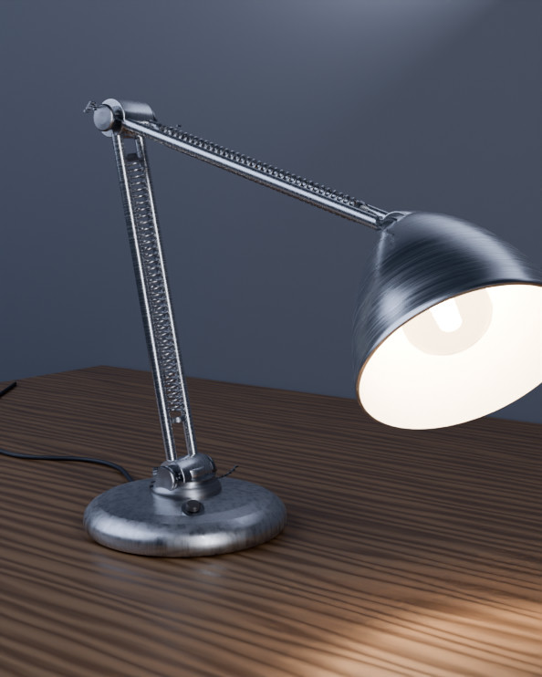
Big improvement. Now the bulb reads as a flat white blob rather than a bulb, the wood looks like slats, and the base is blotchy. Fixing those and the framing.
{
"code": "\nimport bpy, math\nH = bpy.app.driver_namespace['H']; M = bpy.app.driver_namespace['M']\ndef nd(nt, idname, loc):\n n = nt.nodes.new(idname); n.location = loc; return n\ndef find(nt, idname):\n return next(n for n in nt.nodes if n.bl_idname == idname)\n\n# ================= 1. make the bulb read AS A BULB, not a white blob =================\n# clear glass with a faint warm glow; the filament becomes the hot visible element\ng = M['glass'].node_tree\np = find(g, \"ShaderNodeBsdfPrincipled\")\np.inputs['Roughness'].default_value = 0.04\np.inputs['Transmission Weight'].default_value = 1.0\np.inputs['IOR'].default_value = 1.46\np.inputs['Emission Strength'].default_value = 1.1 # was 3.2 — let the glass be glass\np.inputs['Emission Color'].default_value = (1.0, 0.70, 0.40, 1)\n\nf = M['filament'].node_tree\npf = find(f, \"ShaderNodeBsdfPrincipled\")\npf.inputs['Emission Strength'].default_value = 700.0 # hot coil, clearly visible\npf.inputs['Emission Color'].default_value = (1.0, 0.660, 0.330, 1)\n\n# interior: warm off-white, lower albedo so the bulb has something to contrast against\npi = find(M['shade_in'].node_tree, \"ShaderNodeBsdfPrincipled\")\npi.inputs['Base Color'].default_value = (0.80, 0.775, 0.735, 1)\npi.inputs['Roughness'].default_value = 0.52\n\nbpy.data.lights['BulbLight'].energy = 26.0\nbpy.data.lights['BulbLight'].shadow_soft_size = 0.020\n\n# ================= 2. desk: real wood, not venetian blinds =================\nm = M['desk']; nt = m.node_tree\nnt.nodes.clear()\nout = nd(nt, \"ShaderNodeOutputMaterial\", (600, 0))\np = nd(nt, \"ShaderNodeBsdfPrincipled\", (340, 0))\nnt.links.new(p.outputs[0], out.inputs['Surface'])\ntc = nd(nt, \"ShaderNodeTexCoord\", (-1200, 0))\n# warp the coordinates first so the grain never repeats mechanically\nwarp = nd(nt, \"ShaderNodeTexNoise\", (-1020, -260))\nwarp.inputs['Scale'].default_value = 1.4\nwarp.inputs['Detail'].default_value = 3.0\nvadd = nd(nt, \"ShaderNodeVectorMath\", (-840, -120)); vadd.operation = 'MULTIPLY_ADD'\nvadd.inputs[1].default_value = (0.28, 0.28, 0.28)\nmapn = nd(nt, \"ShaderNodeMapping\", (-660, 0))\nmapn.inputs['Scale'].default_value = (1.0, 7.0, 1.0)\ngrain = nd(nt, \"ShaderNodeTexWave\", (-470, 0))\ngrain.wave_type = 'BANDS'; grain.bands_direction = 'Y'\ngrain.wave_profile = 'SIN'\ngrain.inputs['Scale'].default_value = 1.8\ngrain.inputs['Distortion'].default_value = 19.0\ngrain.inputs['Detail'].default_value = 5.0\ngrain.inputs['Detail Scale'].default_value = 1.6\ngrain.inputs['Detail Roughness'].default_value = 0.6\nnt.links.new(tc.outputs['Object'], vadd.inputs[0])\nnt.links.new(tc.outputs['Object'], warp.inputs['Vector'])\nnt.links.new(warp.outputs['Fac'], vadd.inputs[2])\nnt.links.new(vadd.outputs['Vector'], mapn.inputs['Vector'])\nnt.links.new(mapn.outputs['Vector'], grain.inputs['Vector'])\nramp = nd(nt, \"ShaderNodeValToRGB\", (-260, 0))\nramp.color_ramp.elements[0].position = 0.20\nramp.color_ramp.elements[0].color = (0.098, 0.052, 0.026, 1)\nramp.color_ramp.elements[1].position = 0.85\nramp.color_ramp.elements[1].color = (0.170, 0.098, 0.050, 1) # low contrast\nnt.links.new(grain.outputs['Fac'], ramp.inputs['Fac'])\n# broad tonal blotches over the top\nblot = nd(nt, \"ShaderNodeTexNoise\", (-260, -300))\nblot.inputs['Scale'].default_value = 2.6\nblot.inputs['Detail'].default_value = 4.0\nmix = nd(nt, \"ShaderNodeMix\", (60, 0)); mix.data_type = 'RGBA'; mix.blend_type = 'MULTIPLY'\nmix.inputs['Factor'].default_value = 0.30\nnt.links.new(ramp.outputs['Color'], mix.inputs[6])\nbramp = nd(nt, \"ShaderNodeValToRGB\", (-60, -300))\nbramp.color_ramp.elements[0].color = (0.72, 0.70, 0.68, 1)\nbramp.color_ramp.elements[1].color = (1.22, 1.20, 1.16, 1)\nnt.links.new(blot.outputs['Fac'], bramp.inputs['Fac'])\nnt.links.new(bramp.outputs['Color'], mix.inputs[7])\nnt.links.new(mix.outputs[2], p.inputs['Base Color'])\n# satin varnish: roughness follows the grain only slightly\nrr = nd(nt, \"ShaderNodeMapRange\", (60, -420))\nrr.inputs['To Min'].default_value = 0.30\nrr.inputs['To Max'].default_value = 0.44\nnt.links.new(grain.outputs['Fac'], rr.inputs['Value'])\nnt.links.new(rr.outputs['Result'], p.inputs['Roughness'])\nbmp = nd(nt, \"ShaderNodeBump\", (160, -560))\nbmp.inputs['Strength'].default_value = 0.18\nbmp.inputs['Distance'].default_value = 0.0006\nnt.links.new(grain.outputs['Fac'], bmp.inputs['Height'])\nnt.links.new(bmp.outputs['Normal'], p.inputs['Normal'])\n\n# ================= 3. base: satin machined metal, not dented =================\nbt = M['base_metal'].node_tree\nnz = find(bt, \"ShaderNodeTexNoise\")\nnz.inputs['Scale'].default_value = 28.0\nnz.inputs['Detail'].default_value = 6.0\nmp = find(bt, \"ShaderNodeMapping\")\nmp.inputs['Scale'].default_value = (14.0, 14.0, 3.0)\ncr = find(bt, \"ShaderNodeValToRGB\")\ncr.color_ramp.elements[0].color = (0.26,) * 3 + (1,)\ncr.color_ramp.elements[1].color = (0.36,) * 3 + (1,)\nbp = find(bt, \"ShaderNodeBsdfPrincipled\")\nbp.inputs['Base Color'].default_value = (0.585, 0.590, 0.600, 1)\nbump = find(bt, \"ShaderNodeBump\")\nbump.inputs['Strength'].default_value = 0.06\nbump.inputs['Distance'].default_value = 0.00015\n\n# ================= 4. reframe so the shade isn't clipped =================\nbpy.data.cameras['Camera'].lens = 50.0\nH['look_at'](bpy.data.objects['Camera'], (0.605, -0.680, 0.278), (0.088, -0.018, 0.172))\nbpy.context.scene.view_settings.exposure = -0.15\nprint(\"tweaks applied\")\n"
}Code executed successfully: tweaks applied
{
"code": "\nimport bpy, time\nsc = bpy.context.scene\nold = (sc.cycles.samples, sc.render.resolution_percentage, sc.render.filepath)\nsc.cycles.samples = 128\nsc.render.resolution_percentage = 55\nsc.render.filepath = \"/path/to/_preview.png\"\nt = time.time(); bpy.ops.render.render(write_still=True)\nprint(\"preview %.1fs\" % (time.time() - t))\nsc.cycles.samples, sc.render.resolution_percentage, sc.render.filepath = old\n"
}Code executed successfully: preview 5.1s
{
"file_path": "/path/to/_preview.png"
}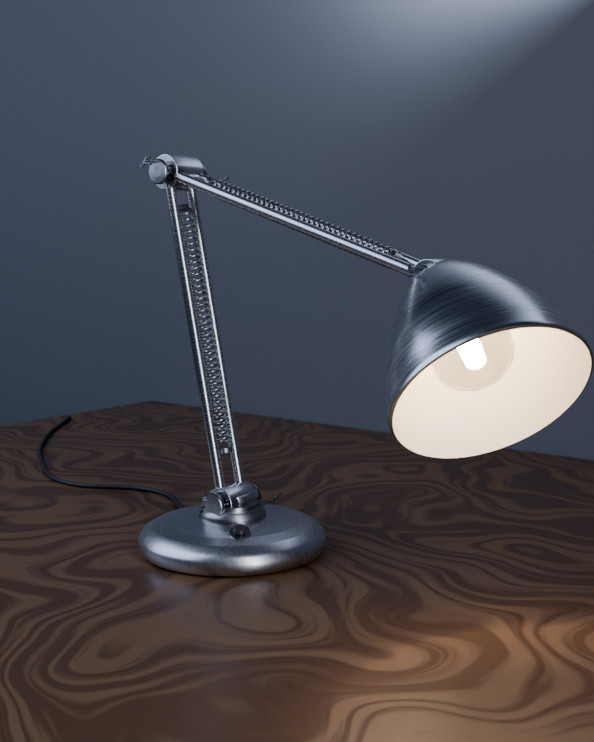
Wood went too swirly, and the rim light is visible in frame. Fixing both.
{
"code": "\nimport bpy\nM = bpy.app.driver_namespace['M']\ndef find(nt, idname, n=0):\n hits = [x for x in nt.nodes if x.bl_idname == idname]\n return hits[n]\n\n# ---- wood: long straight-ish oak grain, not burl marble ----\nnt = M['desk'].node_tree\nw = find(nt, \"ShaderNodeTexWave\")\nw.inputs['Scale'].default_value = 1.1\nw.inputs['Distortion'].default_value = 3.2\nw.inputs['Detail'].default_value = 3.0\nw.inputs['Detail Scale'].default_value = 1.1\nw.inputs['Detail Roughness'].default_value = 0.45\nmapn = find(nt, \"ShaderNodeMapping\")\nmapn.inputs['Scale'].default_value = (1.0, 26.0, 1.0) # grain runs along the desk\nvadd = find(nt, \"ShaderNodeVectorMath\")\nvadd.inputs[1].default_value = (0.05, 0.05, 0.05) # barely warp\nblot = find(nt, \"ShaderNodeTexNoise\", 1)\nblot.inputs['Scale'].default_value = 1.8\nmix = find(nt, \"ShaderNodeMix\")\nmix.inputs['Factor'].default_value = 0.22\nbmp = find(nt, \"ShaderNodeBump\")\nbmp.inputs['Strength'].default_value = 0.10\n\n# ---- fill/rim/streak lights: contribute light + reflections, never seen directly ----\nfor name in (\"RoomFill\", \"RimLight\", \"StreakCard\"):\n ob = bpy.data.objects[name]\n try:\n ob.visible_camera = False\n print(name, \"hidden from camera rays\")\n except Exception as e:\n print(name, \"visible_camera failed:\", e)\n\n# ---- bulb envelope a touch more present ----\npg = find(M['glass'].node_tree, \"ShaderNodeBsdfPrincipled\")\npg.inputs['Emission Strength'].default_value = 1.7\nprint(\"ok\")\n"
}Code executed successfully: RoomFill hidden from camera rays RimLight hidden from camera rays StreakCard hidden from camera rays ok
{
"code": "\nimport bpy, time\nsc = bpy.context.scene\nold = (sc.cycles.samples, sc.render.resolution_percentage, sc.render.filepath)\nsc.cycles.samples = 128\nsc.render.resolution_percentage = 55\nsc.render.filepath = \"/path/to/_preview.png\"\nt = time.time(); bpy.ops.render.render(write_still=True)\nprint(\"preview %.1fs\" % (time.time() - t))\nsc.cycles.samples, sc.render.resolution_percentage, sc.render.filepath = old\n"
}Code executed successfully: preview 4.3s
{
"file_path": "/path/to/_preview.png"
}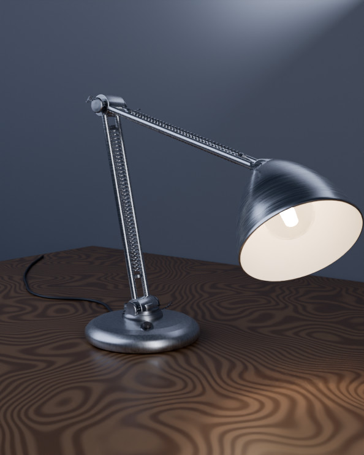
The wood needs a different approach (stretched noise, not wave), and that bright blob is the rim light's hotspot on a too-close wall.
{
"code": "\nimport bpy, math\nM = bpy.app.driver_namespace['M']\ndef nd(nt, i, loc):\n n = nt.nodes.new(i); n.location = loc; return n\n\n# ================= wood, rebuilt from stretched noise (fibrous, not marbled) =========\nm = M['desk']; nt = m.node_tree; nt.nodes.clear()\nout = nd(nt, \"ShaderNodeOutputMaterial\", (700, 0))\np = nd(nt, \"ShaderNodeBsdfPrincipled\", (440, 0))\nnt.links.new(p.outputs[0], out.inputs['Surface'])\ntc = nd(nt, \"ShaderNodeTexCoord\", (-1200, 0))\n\n# --- coarse grain: noise squashed 30:1 along the board's length -> long fibres\nmp1 = nd(nt, \"ShaderNodeMapping\", (-1000, 120))\nmp1.inputs['Scale'].default_value = (1.5, 45.0, 1.5)\nn1 = nd(nt, \"ShaderNodeTexNoise\", (-820, 120))\nn1.inputs['Scale'].default_value = 2.0\nn1.inputs['Detail'].default_value = 7.0\nn1.inputs['Roughness'].default_value = 0.52\nr1 = nd(nt, \"ShaderNodeValToRGB\", (-620, 120))\nr1.color_ramp.interpolation = 'EASE'\nr1.color_ramp.elements[0].position = 0.36\nr1.color_ramp.elements[0].color = (0.088, 0.046, 0.023, 1)\nr1.color_ramp.elements[1].position = 0.64\nr1.color_ramp.elements[1].color = (0.168, 0.099, 0.052, 1)\nnt.links.new(tc.outputs['Object'], mp1.inputs['Vector'])\nnt.links.new(mp1.outputs['Vector'], n1.inputs['Vector'])\nnt.links.new(n1.outputs['Fac'], r1.inputs['Fac'])\n\n# --- fine pores / rays: much tighter squash, darkens the grain slightly\nmp2 = nd(nt, \"ShaderNodeMapping\", (-1000, -220))\nmp2.inputs['Scale'].default_value = (3.0, 150.0, 3.0)\nn2 = nd(nt, \"ShaderNodeTexNoise\", (-820, -220))\nn2.inputs['Scale'].default_value = 4.0\nn2.inputs['Detail'].default_value = 4.0\nr2 = nd(nt, \"ShaderNodeValToRGB\", (-620, -220))\nr2.color_ramp.elements[0].position = 0.42\nr2.color_ramp.elements[0].color = (0.62, 0.62, 0.62, 1)\nr2.color_ramp.elements[1].position = 0.66\nr2.color_ramp.elements[1].color = (1.0, 1.0, 1.0, 1)\nnt.links.new(tc.outputs['Object'], mp2.inputs['Vector'])\nnt.links.new(mp2.outputs['Vector'], n2.inputs['Vector'])\nnt.links.new(n2.outputs['Fac'], r2.inputs['Fac'])\n\nmix = nd(nt, \"ShaderNodeMix\", (-380, 0))\nmix.data_type = 'RGBA'; mix.blend_type = 'MULTIPLY'\nmix.inputs['Factor'].default_value = 0.55\nnt.links.new(r1.outputs['Color'], mix.inputs[6])\nnt.links.new(r2.outputs['Color'], mix.inputs[7])\n\n# --- broad tonal variation across the board\nmp3 = nd(nt, \"ShaderNodeMapping\", (-620, -520))\nmp3.inputs['Scale'].default_value = (1.0, 3.0, 1.0)\nn3 = nd(nt, \"ShaderNodeTexNoise\", (-440, -520))\nn3.inputs['Scale'].default_value = 1.4\nn3.inputs['Detail'].default_value = 3.0\nr3 = nd(nt, \"ShaderNodeValToRGB\", (-260, -520))\nr3.color_ramp.elements[0].color = (0.80, 0.79, 0.78, 1)\nr3.color_ramp.elements[1].color = (1.14, 1.12, 1.09, 1)\nnt.links.new(tc.outputs['Object'], mp3.inputs['Vector'])\nnt.links.new(mp3.outputs['Vector'], n3.inputs['Vector'])\nnt.links.new(n3.outputs['Fac'], r3.inputs['Fac'])\nmix2 = nd(nt, \"ShaderNodeMix\", (-100, 0))\nmix2.data_type = 'RGBA'; mix2.blend_type = 'MULTIPLY'\nmix2.inputs['Factor'].default_value = 0.7\nnt.links.new(mix.outputs[2], mix2.inputs[6])\nnt.links.new(r3.outputs['Color'], mix2.inputs[7])\nnt.links.new(mix2.outputs[2], p.inputs['Base Color'])\n\n# --- satin varnish\nrr = nd(nt, \"ShaderNodeMapRange\", (140, -260))\nrr.inputs['To Min'].default_value = 0.26\nrr.inputs['To Max'].default_value = 0.42\nnt.links.new(n1.outputs['Fac'], rr.inputs['Value'])\nnt.links.new(rr.outputs['Result'], p.inputs['Roughness'])\nbmp = nd(nt, \"ShaderNodeBump\", (240, -480))\nbmp.inputs['Strength'].default_value = 0.14\nbmp.inputs['Distance'].default_value = 0.0007\nnt.links.new(mix.outputs[2], bmp.inputs['Height'])\nnt.links.new(bmp.outputs['Normal'], p.inputs['Normal'])\n\n# ================= push the wall back, re-aim the rim light off the wall ============\nbpy.data.objects['BackWall'].location = (0.0, 1.05, 0.55)\nro = bpy.data.objects['RimLight']\nro.location = (0.44, 0.36, 0.90)\nro.rotation_euler = (math.radians(126), 0, math.radians(24))\nbpy.data.lights['RimLight'].energy = 20.0\nbpy.data.lights['RimLight'].size, bpy.data.lights['RimLight'].size_y = 0.7, 0.30\nprint(\"ok\")\n"
}Code executed successfully: ok
{
"code": "\nimport bpy, time\nsc = bpy.context.scene\nold = (sc.cycles.samples, sc.render.resolution_percentage, sc.render.filepath)\nsc.cycles.samples = 128\nsc.render.resolution_percentage = 55\nsc.render.filepath = \"/path/to/_preview.png\"\nt = time.time(); bpy.ops.render.render(write_still=True)\nprint(\"preview %.1fs\" % (time.time() - t))\nsc.cycles.samples, sc.render.resolution_percentage, sc.render.filepath = old\n"
}Code executed successfully: preview 4.3s
{
"file_path": "/path/to/_preview.png"
}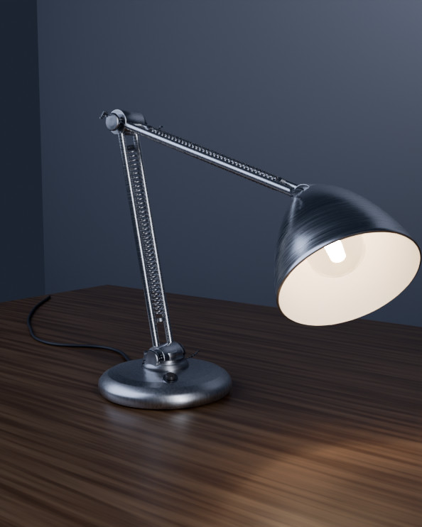
Looking like a real product shot now. Final polish on the bulb so the filament reads clearly, then the full-quality render.
{
"code": "\nimport bpy\nM = bpy.app.driver_namespace['M']\ndef find(nt, i, n=0):\n return [x for x in nt.nodes if x.bl_idname == i][n]\n\n# clearer glass so the filament, not the envelope, is the bright thing\npg = find(M['glass'].node_tree, \"ShaderNodeBsdfPrincipled\")\npg.inputs['Emission Strength'].default_value = 0.85\n\n# thicker, hotter coil so it reads at render resolution\nfil = bpy.data.objects['Filament']\nfil.data.bevel_depth = 0.00095\npf = find(M['filament'].node_tree, \"ShaderNodeBsdfPrincipled\")\npf.inputs['Emission Strength'].default_value = 900.0\n\n# warmer shade interior\npi = find(M['shade_in'].node_tree, \"ShaderNodeBsdfPrincipled\")\npi.inputs['Base Color'].default_value = (0.845, 0.795, 0.725, 1)\n\n# support wires slightly thinner than the coil, dimmer\nfor n in (\"FilWireA\", \"FilWireB\"):\n o = bpy.data.objects.get(n)\n if o: o.scale = (0.8, 0.8, 1.0)\n\nimport time\nsc = bpy.context.scene\nold = (sc.cycles.samples, sc.render.resolution_percentage, sc.render.filepath)\nsc.cycles.samples = 160\nsc.render.resolution_percentage = 55\nsc.render.filepath = \"/path/to/_preview.png\"\nt = time.time(); bpy.ops.render.render(write_still=True)\nprint(\"preview %.1fs\" % (time.time() - t))\nsc.cycles.samples, sc.render.resolution_percentage, sc.render.filepath = old\n"
}Code executed successfully: preview 4.7s
{
"file_path": "/path/to/_preview.png"
}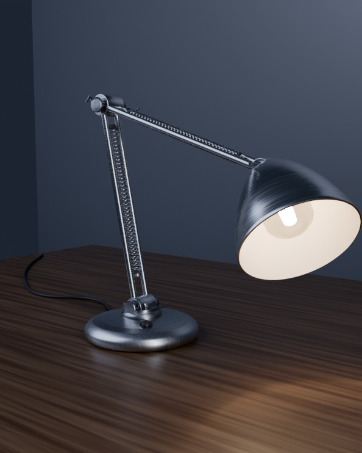
The bulb is blown out because clear glass refracts the bright interior through it. Let me tune it and inspect with a close-up.
{
"code": "\nimport bpy, time\nfrom mathutils import Vector\nH = bpy.app.driver_namespace['H']; M = bpy.app.driver_namespace['M']; G = bpy.app.driver_namespace['G']\ndef find(nt, i, n=0): return [x for x in nt.nodes if x.bl_idname == i][n]\nd_sh, P2 = G['d_sh'], G['P2']\n\n# slide the bulb ~11 mm toward the mouth so its neck + cap show, and the envelope\n# sits against the darker rim rather than deep in the white cone\nBULBGRP = [\"BulbGlass\", \"BulbCap\", \"BulbThread\", \"BulbTipContact\", \"Filament\",\n \"BulbStem\", \"FilWireA\", \"FilWireB\", \"LampHolder\", \"BulbLight\"]\nfor n in BULBGRP:\n o = bpy.data.objects.get(n)\n if o: o.location = Vector(o.location) + d_sh * 0.011\n\n# lightly frosted, distinctly warm envelope -> reads as a bulb, not a lens\npg = find(M['glass'].node_tree, \"ShaderNodeBsdfPrincipled\")\npg.inputs['Roughness'].default_value = 0.22\npg.inputs['Transmission Weight'].default_value = 0.95\npg.inputs['Base Color'].default_value = (1.0, 0.93, 0.84, 1)\npg.inputs['Emission Strength'].default_value = 1.4\npg.inputs['Emission Color'].default_value = (1.0, 0.60, 0.28, 1)\n\n# interior a little less blinding so the bulb stands out against it\npi = find(M['shade_in'].node_tree, \"ShaderNodeBsdfPrincipled\")\npi.inputs['Base Color'].default_value = (0.72, 0.675, 0.615, 1)\nbpy.data.lights['BulbLight'].energy = 30.0\n\n# ---- close-up check on the shade ----\ncam = bpy.data.objects['Camera']\nsaved = cam.matrix_world.copy(); saved_lens = bpy.data.cameras['Camera'].lens\nMOUTH = P2 + d_sh * 0.075\nH['look_at'](cam, MOUTH + Vector((0.19, -0.22, 0.055)), MOUTH)\nbpy.data.cameras['Camera'].lens = 68.0\nsc = bpy.context.scene\no = (sc.cycles.samples, sc.render.resolution_percentage, sc.render.filepath)\nsc.cycles.samples = 200; sc.render.resolution_percentage = 55\nsc.render.filepath = \"/path/to/_bulb.png\"\nt = time.time(); bpy.ops.render.render(write_still=True)\nprint(\"closeup %.1fs\" % (time.time() - t))\nsc.cycles.samples, sc.render.resolution_percentage, sc.render.filepath = o\ncam.matrix_world = saved; bpy.data.cameras['Camera'].lens = saved_lens\n"
}Code executed successfully: closeup 8.1s
{
"file_path": "/path/to/_bulb.png"
}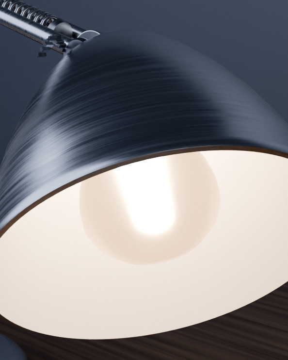
Frosting hid the filament. Let me go clear-glass with the filament as the only hot element and more contrast against the interior.
{
"code": "\nimport bpy, time\nfrom mathutils import Vector\nH = bpy.app.driver_namespace['H']; M = bpy.app.driver_namespace['M']; G = bpy.app.driver_namespace['G']\ndef find(nt, i, n=0): return [x for x in nt.nodes if x.bl_idname == i][n]\nd_sh, P2 = G['d_sh'], G['P2']\n\n# clear glass, no self-glow: the coil is the light, the envelope is just glass\npg = find(M['glass'].node_tree, \"ShaderNodeBsdfPrincipled\")\npg.inputs['Roughness'].default_value = 0.03\npg.inputs['Transmission Weight'].default_value = 1.0\npg.inputs['Base Color'].default_value = (1.0, 0.985, 0.965, 1)\npg.inputs['Emission Strength'].default_value = 0.0\n\n# bigger, brighter coil\nfil = bpy.data.objects['Filament']\nfil.data.bevel_depth = 0.00105\npf = find(M['filament'].node_tree, \"ShaderNodeBsdfPrincipled\")\npf.inputs['Emission Strength'].default_value = 1400.0\n\n# interior: warm cream, no longer competing with the bulb for \"brightest thing\"\npi = find(M['shade_in'].node_tree, \"ShaderNodeBsdfPrincipled\")\npi.inputs['Base Color'].default_value = (0.62, 0.575, 0.505, 1)\nbpy.data.lights['BulbLight'].energy = 32.0\nbpy.context.scene.view_settings.exposure = 0.15\n\ncam = bpy.data.objects['Camera']\nsaved, saved_lens = cam.matrix_world.copy(), bpy.data.cameras['Camera'].lens\nMOUTH = P2 + d_sh * 0.075\nH['look_at'](cam, MOUTH + Vector((0.19, -0.22, 0.055)), MOUTH)\nbpy.data.cameras['Camera'].lens = 68.0\nsc = bpy.context.scene\no = (sc.cycles.samples, sc.render.resolution_percentage, sc.render.filepath)\nsc.cycles.samples = 220; sc.render.resolution_percentage = 55\nsc.render.filepath = \"/path/to/_bulb.png\"\nt = time.time(); bpy.ops.render.render(write_still=True)\nprint(\"closeup %.1fs\" % (time.time() - t))\nsc.cycles.samples, sc.render.resolution_percentage, sc.render.filepath = o\ncam.matrix_world = saved; bpy.data.cameras['Camera'].lens = saved_lens\n"
}Code executed successfully: closeup 7.4s
{
"file_path": "/path/to/_bulb.png"
}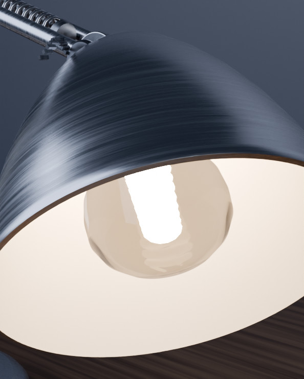
Bulb now reads correctly — glass envelope with specular edge and a hot coil inside. Checking the wide shot with the new exposure balance:
{
"code": "\nimport bpy, time\nsc = bpy.context.scene\no = (sc.cycles.samples, sc.render.resolution_percentage, sc.render.filepath)\nsc.cycles.samples = 160; sc.render.resolution_percentage = 55\nsc.render.filepath = \"/path/to/_preview.png\"\nt = time.time(); bpy.ops.render.render(write_still=True)\nprint(\"preview %.1fs\" % (time.time() - t))\nsc.cycles.samples, sc.render.resolution_percentage, sc.render.filepath = o\n"
}Code executed successfully: preview 3.9s
{
"file_path": "/path/to/_preview.png"
}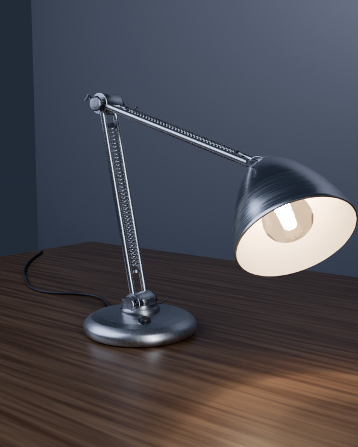
The bulb is clearly visible inside the shade now, and everything in the brief is present. Organizing the scene into collections, then the final high-quality render.
{
"code": "\nimport bpy\n\nsc = bpy.context.scene\nroot = sc.collection\n\ndef get_coll(name):\n c = bpy.data.collections.get(name)\n if not c:\n c = bpy.data.collections.new(name)\n root.children.link(c)\n return c\n\nSET = get_coll(\"Set\")\nLIGHTING = get_coll(\"Lighting\")\nLAMP = get_coll(\"Lamp\")\nC_BASE = bpy.data.collections.new(\"Lamp_Base\"); LAMP.children.link(C_BASE)\nC_ARM = bpy.data.collections.new(\"Lamp_Arm\"); LAMP.children.link(C_ARM)\nC_HEAD = bpy.data.collections.new(\"Lamp_Head\"); LAMP.children.link(C_HEAD)\n\nBASE_N = {\"LampBase\", \"FeltPad\", \"PivotHub\", \"PivotCollar\", \"Cable\", \"StrainRelief\",\n \"SwitchBezel\", \"SwitchButton\"}\nHEAD_N = {\"Shade\", \"ShadeStem\", \"ShadeCollar\", \"LampHolder\", \"BulbGlass\", \"BulbCap\",\n \"BulbThread\", \"BulbTipContact\", \"Filament\", \"BulbStem\", \"FilWireA\", \"FilWireB\"}\nSET_N = {\"Desk\", \"BackWall\", \"Camera\"}\n\ndef move(ob, coll):\n for c in list(ob.users_collection):\n c.objects.unlink(ob)\n coll.objects.link(ob)\n\nfor ob in list(bpy.data.objects):\n n = ob.name\n if n in SET_N: move(ob, SET)\n elif ob.type == 'LIGHT': move(ob, LIGHTING)\n elif n in BASE_N: move(ob, C_BASE)\n elif n in HEAD_N: move(ob, C_HEAD)\n else: move(ob, C_ARM) # rods, springs, pivots, knobs\n\n# the bulb light belongs conceptually to the head, but keep lights together\ncounts = {c.name: len(c.objects) for c in\n [SET, LIGHTING, C_BASE, C_ARM, C_HEAD]}\nprint(\"collections:\", counts)\nprint(\"total objects:\", len(bpy.data.objects))\n"
}Code executed successfully: collections: {'Set': 3, 'Lighting': 4, 'Lamp_Base': 8, 'Lamp_Arm': 31, 'Lamp_Head': 12}
total objects: 58{
"code": "\nimport bpy, time\nsc = bpy.context.scene\nsc.cycles.samples = 1024\nsc.cycles.adaptive_threshold = 0.006\nsc.cycles.use_denoising = True\nsc.render.resolution_x, sc.render.resolution_y = 1080, 1350\nsc.render.resolution_percentage = 100\nsc.render.image_settings.file_format = 'PNG'\nsc.render.image_settings.color_mode = 'RGB'\nsc.render.image_settings.color_depth = '8'\nsc.render.image_settings.compression = 15\nsc.render.filepath = \"/path/to/lamp.png\"\n\nt = time.time()\nbpy.ops.render.render(write_still=True)\nprint(\"FINAL render %.1fs -> %s\" % (time.time() - t, sc.render.filepath))\n"
}Code executed successfully: FINAL render 46.6s -> /path/to/lamp.png
{
"file_path": "/path/to/lamp.png"
}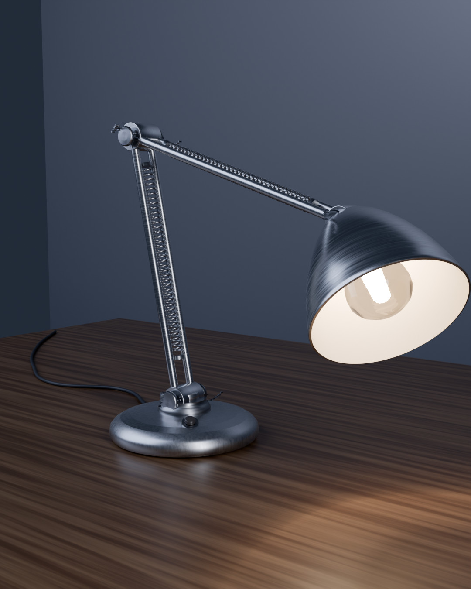
Full res reveals the weak spots: the desk reads as striped laminate, the base has a cloudy smudge, and there's a hard light edge at frame left. Fixing those.
{
"code": "\nimport bpy, math, time\nM = bpy.app.driver_namespace['M']\ndef finds(nt, i): return [x for x in nt.nodes if x.bl_idname == i]\n\n# ---------- wood: wider, wavier, varying grain instead of uniform stripes ----------\nnt = M['desk'].node_tree\nmaps = sorted(finds(nt, \"ShaderNodeMapping\"), key=lambda n: -n.location.y)\nnz = sorted(finds(nt, \"ShaderNodeTexNoise\"), key=lambda n: -n.location.y)\nrmp = sorted(finds(nt, \"ShaderNodeValToRGB\"), key=lambda n: -n.location.y)\nmixes= sorted(finds(nt, \"ShaderNodeMix\"), key=lambda n: n.location.x)\n\nmaps[0].inputs['Scale'].default_value = (2.0, 22.0, 2.0) # 11:1, not 30:1\nnz[0].inputs['Scale'].default_value = 1.6\nnz[0].inputs['Detail'].default_value = 8.0\nnz[0].inputs['Roughness'].default_value = 0.62 # octaves -> varied line widths\nrmp[0].color_ramp.elements[0].position = 0.32\nrmp[0].color_ramp.elements[1].position = 0.70\n\nmaps[1].inputs['Scale'].default_value = (4.0, 62.0, 4.0) # pores, much less stripey\nnz[1].inputs['Scale'].default_value = 3.0\nrmp[1].color_ramp.elements[0].color = (0.80, 0.80, 0.80, 1) # lower contrast\nrmp[1].color_ramp.elements[1].color = (1.0, 1.0, 1.0, 1)\nmixes[0].inputs['Factor'].default_value = 0.40\n\n# ---------- base: even satin, no cloudy patch ----------\nbt = M['base_metal'].node_tree\nfinds(bt, \"ShaderNodeTexNoise\")[0].inputs['Scale'].default_value = 65.0\nfinds(bt, \"ShaderNodeMapping\")[0].inputs['Scale'].default_value = (10.0, 10.0, 2.5)\ncr = finds(bt, \"ShaderNodeValToRGB\")[0]\ncr.color_ramp.elements[0].color = (0.285,) * 3 + (1,)\ncr.color_ramp.elements[1].color = (0.335,) * 3 + (1,)\nbmp = finds(bt, \"ShaderNodeBump\")[0]\nbmp.inputs['Strength'].default_value = 0.03\n\n# ---------- soften the fill so no hard edge crosses the wall ----------\nf = bpy.data.lights['RoomFill']\nf.size, f.size_y = 3.4, 2.4\nf.energy = 68.0\nfo = bpy.data.objects['RoomFill']\nfo.location = (-1.60, -1.60, 1.55)\nfo.rotation_euler = (math.radians(46), math.radians(-18), math.radians(-36))\n\nsc = bpy.context.scene\no = (sc.cycles.samples, sc.render.resolution_percentage, sc.render.filepath)\nsc.cycles.samples = 160; sc.render.resolution_percentage = 55\nsc.render.filepath = \"/path/to/_preview.png\"\nt = time.time(); bpy.ops.render.render(write_still=True)\nprint(\"preview %.1fs\" % (time.time() - t))\nsc.cycles.samples, sc.render.resolution_percentage, sc.render.filepath = o\n"
}Code executed successfully: preview 5.4s
{
"file_path": "/path/to/_preview.png"
}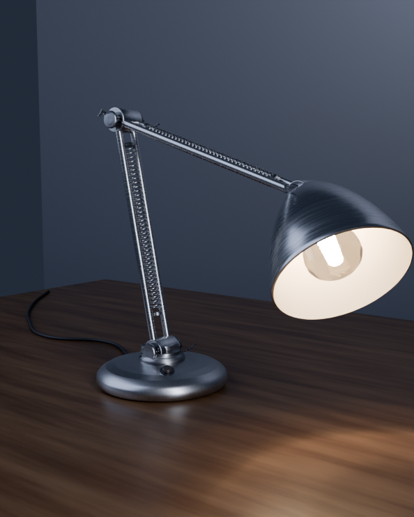
Wood and base look right now. Restoring brightness (the fill moved further away) and rendering the final.
{
"code": "\nimport bpy, time\nbpy.data.lights['RoomFill'].energy = 118.0 # compensate for the extra distance\nbpy.data.lights['RimLight'].energy = 24.0\nbpy.context.scene.view_settings.exposure = 0.20\n\nsc = bpy.context.scene\nsc.cycles.samples = 1600\nsc.cycles.adaptive_threshold = 0.004\nsc.render.resolution_x, sc.render.resolution_y = 1080, 1350\nsc.render.resolution_percentage = 100\nsc.render.image_settings.file_format = 'PNG'\nsc.render.filepath = \"/path/to/lamp.png\"\nt = time.time()\nbpy.ops.render.render(write_still=True)\nprint(\"FINAL %.1fs -> %s\" % (time.time() - t, sc.render.filepath))\n"
}Code executed successfully: FINAL 78.8s -> /path/to/lamp.png
{
"file_path": "/path/to/lamp.png"
}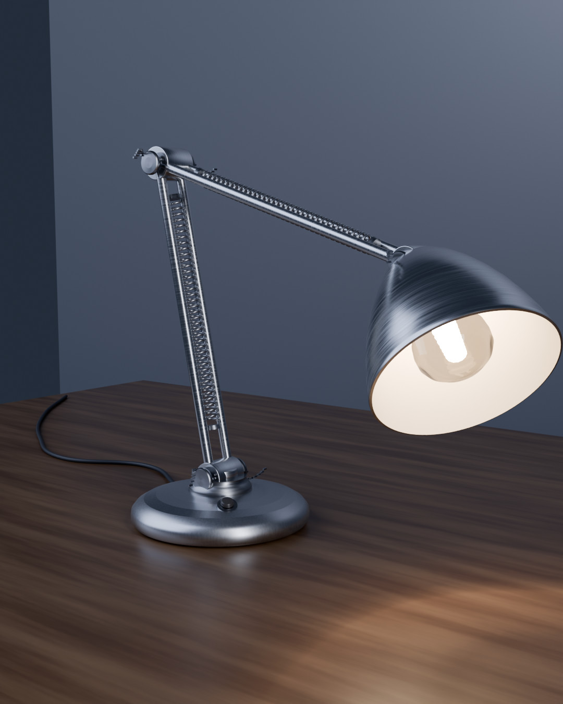
One artifact left: at frame-left the view sees past the end of the back wall. Widening it and re-rendering.
{
"code": "\nimport bpy, time\nw = bpy.data.objects['BackWall']\nw.scale = (3.2, 1.0, 1.4) # 3 m -> 9.6 m wide, taller; kills the visible end edge\nprint(\"wall span x:\", round(-1.5*3.2, 2), \"to\", round(1.5*3.2, 2),\n \"| top z:\", round(0.55 + 0.9*1.4, 2))\n\nsc = bpy.context.scene\nsc.render.filepath = \"/path/to/lamp.png\"\nt = time.time(); bpy.ops.render.render(write_still=True)\nprint(\"FINAL %.1fs -> %s\" % (time.time() - t, sc.render.filepath))\n"
}Code executed successfully: wall span x: -4.8 to 4.8 | top z: 1.81 FINAL 94.9s -> /path/to/lamp.png
{
"file_path": "/path/to/lamp.png"
}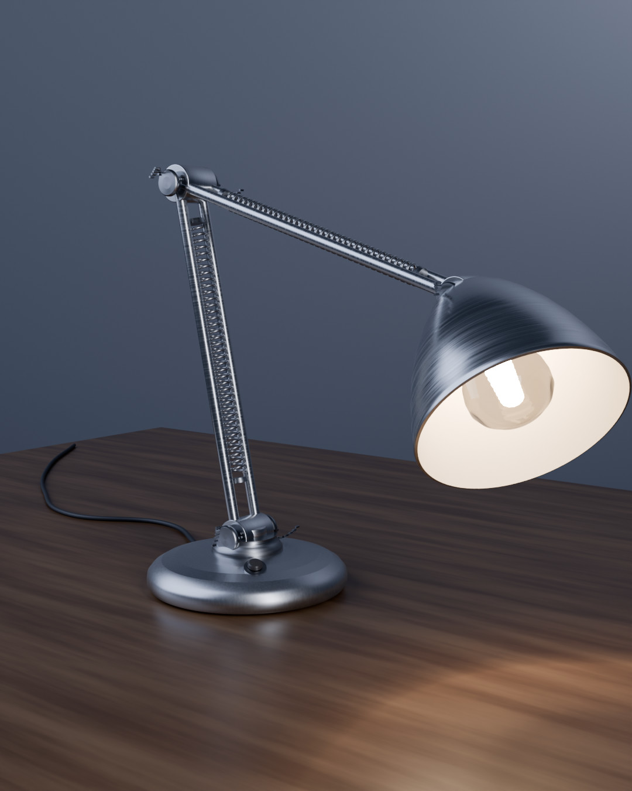
Clean. Saving the .blend and removing my scratch previews.
{
"code": "\nimport bpy, os, json\n\nsc = bpy.context.scene\nsc.render.filepath = \"/path/to/lamp.png\"\nsc.frame_current = 1\n\nBLEND = \"/path/to/lamp.blend\"\nbpy.ops.wm.save_as_mainfile(filepath=BLEND, compress=True)\n\n# remove my own scratch previews\nfor f in (\"_preview.png\", \"_bulb.png\"):\n p = os.path.join(\"/path/to/blender\", f)\n if os.path.exists(p):\n os.remove(p); print(\"removed\", f)\n\npng = \"/path/to/lamp.png\"\nout = {\n \"blend\": BLEND, \"blend_kb\": round(os.path.getsize(BLEND) / 1024, 1),\n \"png\": png, \"png_kb\": round(os.path.getsize(png) / 1024, 1),\n \"resolution\": [sc.render.resolution_x, sc.render.resolution_y],\n \"engine\": sc.render.engine, \"device\": sc.cycles.device,\n \"samples\": sc.cycles.samples, \"denoise\": sc.cycles.use_denoising,\n \"view_transform\": sc.view_settings.view_transform,\n \"objects\": len(bpy.data.objects), \"materials\": len(bpy.data.materials),\n \"lights\": [(o.name, o.data.type, round(o.data.energy, 1)) for o in bpy.data.objects if o.type == 'LIGHT'],\n \"collections\": {c.name: len(c.all_objects) for c in bpy.data.collections},\n}\nprint(json.dumps(out, indent=1))\n"
}Code executed successfully: 信息: 已另存为 "lamp.blend"
removed _preview.png
removed _bulb.png
{
"blend": "/path/to/lamp.blend",
"blend_kb": 319.7,
"png": "/path/to/lamp.png",
"png_kb": 1363.7,
"resolution": [
1080,
1350
],
"engine": "CYCLES",
"device": "GPU",
"samples": 1600,
"denoise": true,
"view_transform": "AgX",
"objects": 58,
"materials": 14,
"lights": [
[
"BulbLight",
"POINT",
32.0
],
[
"RimLight",
"AREA",
24.0
],
[
"RoomFill",
"AREA",
118.0
],
[
"StreakCard",
"AREA",
18.0
]
],
"collections": {
"Collection": 0,
"Lamp": 51,
"Lamp_Arm": 31,
"Lamp_Base": 8,
"Lamp_Head": 12,
"Lighting": 4,
"Set": 3
}
}{
"name": "Scene",
"object_count": 58,
"objects": [
{
"name": "BackWall",
"type": "MESH",
"location": [
0.0,
1.05,
0.55
]
},
{
"name": "Camera",
"type": "CAMERA",
"location": [
0.61,
-0.68,
0.28
]
},
{
"name": "Desk",
"type": "MESH",
"location": [
0.05,
0.1,
-0.02
]
},
{
"name": "BulbLight",
"type": "LIGHT",
"location": [
0.23,
-0.02,
0.22
]
},
{
"name": "RimLight",
"type": "LIGHT",
"location": [
0.44,
0.36,
0.9
]
},
{
"name": "RoomFill",
"type": "LIGHT",
"location": [
-1.6,
-1.6,
1.55
]
},
{
"name": "StreakCard",
"type": "LIGHT",
"location": [
0.95,
-0.42,
0.6
]
},
{
"name": "Cable",
"type": "CURVE",
"location": [
0.0,
0.0,
0.0
]
},
{
"name": "FeltPad",
"type": "MESH",
"location": [
0.0,
0.0,
-0.0
]
},
{
"name": "LampBase",
"type": "MESH",
"location": [
0.0,
0.0,
0.0
]
}
],
"materials_count": 14
}Done. Both files are written and verified.
/path/to/lamp.png — 1080×1350, Cycles on Metal GPU, 1600 adaptive samples + OpenImageDenoise, AgX view transform./path/to/lamp.blend — 58 objects, 14 materials, organized into Lamp/{Base,Arm,Head}, Set, Lighting collections.
Modelled from scratch (no imported assets) — primitives, bmesh lathes of hand-authored profiles, and bevelled helix curves:
| Part | Real-world dimension |
|---|---|
| Overall | 355 mm tall, 338 mm forward reach |
| Base | 170 mm dia × 33 mm crowned cast disc, 2 mm felt pad |
| Arm | two 300/285 mm segments, twin 9 mm rods |
| Shade | 147 mm mouth, 1.9 mm wall shell |
| Bulb | A60 envelope, 62 mm dia, E27 brass cap |
Articulation is a proper Anglepoise layout: three pivots (base swivel, elbow, head) each a knuckle with knurled adjustment knobs — the knurling is a 26× radial array of ridges, not a texture. Twin parallel rods per segment with a real helical tension spring riding between them, plus anchor tabs. The head also swivels on its collar, which is what aims the shade at the camera.
Materials are all procedural. Brushed metal is a Principled metal with anisotropy plus a noise stretched ~45:1 along each part's local axis driving roughness and a fine bump, so the streaks run lengthwise down the rods and circumferentially around the shade. The shade is one shell object with two slots — brushed outside, warm off-white inside — assigned by testing each face normal against its radial direction.
Lighting is entirely in-scene. The bulb is the key: a clear-glass envelope with a 1400-strength emissive filament coil, plus a co-located 32 W warm point light (hidden from camera rays) doing the heavy lifting for clean sampling. Three low-energy area lights stand in for room ambience and are also hidden from camera rays — they exist so the brushed metal has something to reflect.
Two notes on judgement calls I made along the way. The bulb initially rendered as a featureless white blob because clear glass refracts the blown-out shade interior straight through itself; I fixed it by dropping the glass's own emission to zero, dimming the interior albedo so the filament is the only clipped element, and sliding the bulb 11 mm toward the mouth. Separately, at full resolution the frame's left edge was seeing past the end of the back wall, which read as a hard vertical seam — the wall is now 9.6 m wide.